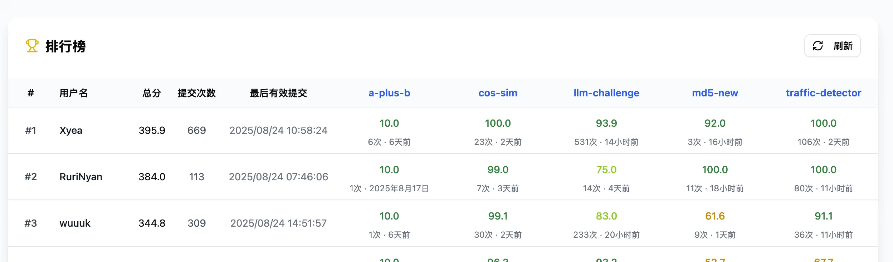
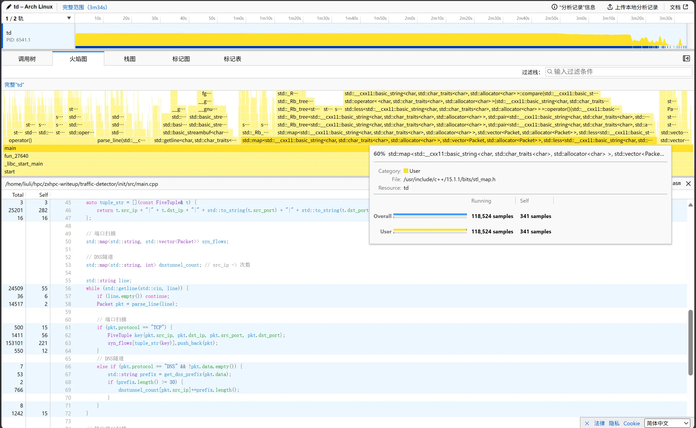
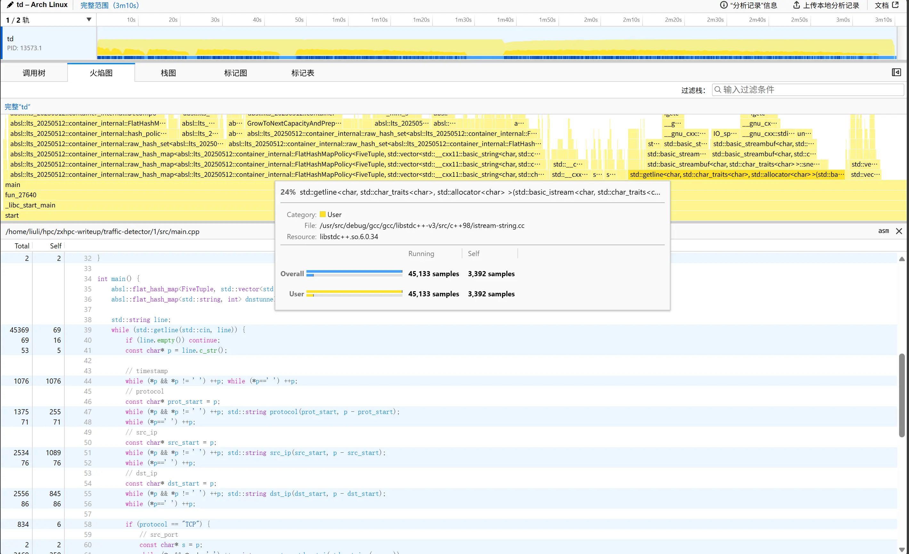

ZXHPC 2025 Writeup¶
因为是一边调整生物钟一边打比赛（虽然到最后也没成功把生物钟调整回来），凌晨上分应该很诡异吧www
最后拿到了 Rank 2 的成绩，其中 md5-new 和 traffic-detector 都拿到了 SOTA 的成绩，总体来说还是很满意的吧

环境信息¶
评测姬的CPU信息如下
Architecture: x86_64
CPU op-mode(s): 32-bit, 64-bit
Byte Order: Little Endian
CPU(s): 40
On-line CPU(s) list: 0-39
Thread(s) per core: 1
Core(s) per socket: 20
Socket(s): 2
NUMA node(s): 2
Vendor ID: GenuineIntel
CPU family: 6
Model: 85
Model name: Intel(R) Xeon(R) Gold 6148 CPU @ 2.40GHz
Stepping: 4
CPU MHz: 2600.001
CPU max MHz: 2401.0000
CPU min MHz: 1000.0000
BogoMIPS: 4800.00
Virtualization: VT-x
L1d cache: 32K
L1i cache: 32K
L2 cache: 1024K
L3 cache: 28160K
NUMA node0 CPU(s): 0-19
NUMA node1 CPU(s): 20-39
Flags: fpu vme de pse tsc msr pae mce cx8 apic sep mtrr pge mca cmov pat pse36 clflush dts acpi mmx fxsr sse sse2 ss ht tm pbe syscall nx pdpe1gb rdtscp lm constant_tsc art arch_perfmon pebs bts rep_good nopl xtopology nonstop_tsc cpuid aperfmperf pni pclmulqdq dtes64 ds_cpl vmx smx est tm2 ssse3 sdbg fma cx16 xtpr pdcm pcid dca sse4_1 sse4_2 x2apic movbe popcnt tsc_deadline_timer aes xsave avx f16c rdrand lahf_lm abm 3dnowprefetch cpuid_fault epb cat_l3 cdp_l3 invpcid_single pti intel_ppin ssbd mba ibrs ibpb stibp tpr_shadow vnmi flexpriority ept vpid ept_ad fsgsbase tsc_adjust bmi1 hle avx2 smep bmi2 erms invpcid rtm cqm mpx rdt_a avx512f avx512dq rdseed adx smap clflushopt clwb intel_pt avx512cd avx512bw avx512vl xsaveopt xsavec xgetbv1 xsaves cqm_llc cqm_occup_llc cqm_mbm_total cqm_mbm_local dtherm ida arat pln pts pku ospke md_clear flush_l1d arch_capabilities
编译器信息：
a+b、cos-sim、md5-bf、md5-new 均使用集群版本为 10.1.0 的 g++ 编译器
traffic-detector 为本机编译静态链接，上传二进制文件
a-plus-b¶
题面 a-plus-b
A+B Problem
题目内容
为了帮助选手熟悉比赛环境和评分器，我们准备了一道简单的题目。通过这道题，你可以熟悉 slurm 环境和评分、提交流程。
给定两个整数 A 和 B，请计算它们的和。
输入格式
输入包含一行，包含两个整数 A 和 B (\(\(1 \le A, B \le 10^9\)\))。
输出格式
输出一个整数，表示 A 和 B 的和。
样例
输入样例
输出样例 评分标准 两个测试点，每个 5 分，共 10 分。其他
关于评分器的使用方法，见评分器文档。
签到一下
#include <iostream>
using namespace std;
int main() {
int a, b;
cin >> a >> b;
cout << a + b;
return 0;
}
cos-sim¶
题面 cos-sim
Cosine Similarity
注意：本题只能在 Linux x86 系统上运行
题目内容
余弦相似度是衡量两个向量在高维空间中方向相似性的指标，它通过计算两个向量夹角的余弦值来判断它们的相似程度，数值范围在 \([-1, 1]\) 之间。其定义为：
现在给定 \(N\) 个 \(D\) 维向量，求这些向量两两之间的余弦相似度。
为了减少输出数据量，你只需要输出每个向量除其自身以外余弦相似度最大的四个向量对应的值。
你的答案被视为正确，当且仅当每个输出数值与标准结果的相对或绝对误差小于 \(10^{-6}\)。
输入格式
通过标准输入输入小端序二进制串，可参考示例代码。
首先是两个 int32，分别表示 \(N\) 和 \(D\)。
接下来是 \(N \times D\) 个 float32，表示 \(N\) 个 \(D\) 维向量。
输出格式
通过标准输出输出小端序二进制串，可参考示例代码。
输出 \(4N\) 个 float32，表示每个向量除其自身以外余弦相似度最大的四个向量对应的值。
评分标准
共四个测试点。
| 测试点 | 分值 | \(N\) | \(D\) | \(T_\text{std}\) | \(T_\text{max}\) |
|---|---|---|---|---|---|
| 1 | 25 | 1000 | 4096 | 0.1s | 10s |
| 2 | 25 | 5000 | 4096 | 0.25s | 120s |
| 3 | 25 | 10000 | 4096 | 0.6s | 120s |
| 4 | 25 | 20000 | 4096 | 1.8s | 120s |
若一个测试点运行时间为 \(T\)，则该测试点分值为
示例程序
#include <algorithm>
#include <cmath>
#include <iostream>
#include <vector>
#include <cstdint>
float cosine_similarity(const float *a, const float *b, int D) {
float dot_product = 0.0f;
float sum_a2 = 0.0f;
float sum_b2 = 0.0f;
for (int i = 0; i < D; ++i) {
dot_product += a[i] * b[i];
sum_a2 += a[i] * a[i];
sum_b2 += b[i] * b[i];
}
return dot_product / (std::sqrt(sum_a2) * std::sqrt(sum_b2) + 1e-12);
}
int main() {
uint32_t N, D;
std::cin.read(reinterpret_cast<char *>(&N), sizeof(N));
std::cin.read(reinterpret_cast<char *>(&D), sizeof(D));
std::vector<float> data(N * D);
std::cin.read(reinterpret_cast<char *>(data.data()), N * D * sizeof(float));
for (int i = 0; i < N; ++i) {
std::vector<float> cosine_sim(N);
for (int j = 0; j < N; ++j) {
cosine_sim[j] = cosine_similarity(data.data() + i * D, data.data() + j * D, D);
}
std::partial_sort(cosine_sim.begin(), cosine_sim.begin() + 5, cosine_sim.begin() + N, std::greater<float>());
std::cout.write(reinterpret_cast<char *>(cosine_sim.data() + 1), 4 * sizeof(float));
}
return 0;
}
该代码仅支持小端序设备。
这个题目的核心任务是，给我们 N 个 D 维的向量，要我们算出每个向量和其他所有向量的余弦相似度，然后找出最大的那四个。
最直观、最暴力的想法，就是老老实实地写两层循环：外层循环遍历向量 i，内层循环遍历向量 j，然后在最里面根据公式计算 i 和 j 的相似度。这个算法的复杂度大概是 O(N² * D)。考虑到 N 最大能到 20000，D 是 4096，这个计算量是天文数字，肯定会超时。
优化思路¶
我们先看一下余弦相似度的公式：
分母部分的 \(||A||\) 和 \(||B||\) 是向量的模长，计算它需要开平方，这是一个非常耗时的操作。如果在 N*N 的循环里反复计算，性能损失会非常大
我们可以预先将所有向量都处理成单位向量，即归一化
归一化之后，所有向量的模长 \(||V||\) 都变成了 1。这时公式就变成了：
计算余弦相似度被简化成了只计算点积。
这一步的开销是 O(N * D)，相比于后续 N² 级别的计算，这点预处理的开销完全可以忽略不计，但它带来的收益是巨大的
之后的问题就是如何高效计算 N*N 的点积矩阵，我首先想到了这个方式：
把 N 个 D 维向量看成一个 N x D 的矩阵 M。那么，M 乘以它自己的转置 M^T，得到的结果 S = M * M^T 是一个 N x N 的矩阵。这个结果矩阵 S 里面，S_ij 的值正好就是向量 i 和向量 j 的点积
这个操作可以通过 BLAS 库里的 cblas_sgemm 函数（通用矩阵乘法）一步完成
小规模优化¶
然后就能开香槟...不对，怎么小矩阵算得这么慢呢？暴力逐点计算在小规模反而更快！？
那就根据 N 的大小判断使用暴力计算还是矩阵乘法！
写了一个 benchmark.cpp 程序在不同的 N 值下对这两个方案进行了性能测试
benchmark.cpp
#include <iostream>
#include <vector>
#include <cstdint>
#include <cmath>
#include <algorithm>
#include <cblas.h>
#include <omp.h>
#include <chrono>
using namespace std;
using namespace std::chrono;
// 方案1：逐点计算
void brute_force(uint32_t N, uint32_t D, const vector<float>& data) {
#pragma omp parallel for
for (uint32_t i = 0; i < N; ++i) {
const float* vec_i = data.data() + (size_t)i * D;
float a=-1,b=-1,c=-1,d=-1;
for (uint32_t j = 0; j < N; ++j) {
if (i == j) continue;
const float* vec_j = data.data() + (size_t)j * D;
float sim = cblas_sdot((int)D, vec_i, 1, vec_j, 1);
if (sim > a){ d=c; c=b; b=a; a=sim; }
else if(sim > b){ d=c; c=b; b=sim; }
else if(sim > c){ d=c; c=sim; }
else if(sim > d){ d=sim; }
}
}
}
// 方案2：矩阵乘法
void gemm_based(uint32_t N, uint32_t D, const vector<float>& data) {
vector<float> cos_matrix((size_t)N * N);
cblas_sgemm(
CblasRowMajor, CblasNoTrans, CblasTrans,
N, N, D,
1.0f,
data.data(), D,
data.data(), D,
0.0f,
cos_matrix.data(), N
);
#pragma omp parallel for
for (uint32_t i = 0; i < N; ++i) {
float* row = cos_matrix.data() + (size_t)i * N;
row[i] = -1.0f;
float a=-1,b=-1,c=-1,d=-1;
for(uint32_t j=0;j<N;j++){
float sim = row[j];
if(sim > a){ d=c; c=b; b=a; a=sim; }
else if(sim > b){ d=c; c=b; b=sim; }
else if(sim > c){ d=c; c=sim; }
else if(sim > d){ d=sim; }
}
}
}
int main() {
uint32_t D = 4096;
vector<int> testNs = {256, 512, 1024, 1500, 2000, 3000, 4000};
cout << "Benchmarking brute_force vs gemm...\n";
for (auto N : testNs) {
vector<float> data((size_t)N * D);
// 随机初始化
for (size_t i = 0; i < data.size(); i++) {
data[i] = (float)rand() / RAND_MAX;
}
// 归一化
for (uint32_t i = 0; i < N; i++) {
float sum=0;
for(uint32_t j=0;j<D;j++) sum += data[i*D+j]*data[i*D+j];
float inv = 1.0f/(sqrt(sum)+1e-12f);
for(uint32_t j=0;j<D;j++) data[i*D+j] *= inv;
}
auto start = high_resolution_clock::now();
brute_force(N, D, data);
auto end = high_resolution_clock::now();
double t1 = duration_cast<milliseconds>(end - start).count();
start = high_resolution_clock::now();
gemm_based(N, D, data);
end = high_resolution_clock::now();
double t2 = duration_cast<milliseconds>(end - start).count();
cout << "N="<<N<<" brute="<<t1<<" ms gemm="<<t2<<" ms -> faster: "
<< (t1<t2?"brute":"gemm") << "\n";
}
return 0;
}
结果：
Benchmarking brute_force vs gemm...
N=256 brute=34 ms gemm=66 ms -> faster: brute
N=512 brute=21 ms gemm=55 ms -> faster: brute
N=1024 brute=23 ms gemm=22 ms -> faster: gemm
N=1500 brute=48 ms gemm=25 ms -> faster: gemm
N=2000 brute=165 ms gemm=49 ms -> faster: gemm
N=3000 brute=556 ms gemm=98 ms -> faster: gemm
N=4000 brute=1020 ms gemm=73 ms -> faster: gemm
- 当
N比较小的时候（比如几百），cblas_sdot反而更快。因为sgemm虽然理论效率高，但它本身有一些固定的启动开销，而且内存分配也需要时间。数据量小的时候，这些额外开销就显得比较突出了 - 当
N增大到某个临界点之后，cblas_sgemm的优势就体现出来了，它的计算效率增长得更快
通过我们的测试，这个临界点大约在 N = 1024 左右
因此最终使用混合策略
- 如果 N < 1024，我们就用逐点计算的方案
- 如果 N >= 1024，我们就用矩阵乘法的方案
这样，无论输入数据的规模如何，程序都能自动选择当前最优的算法路径
最终得分 99.0 pts
1pts差在N=1000时，懒得凹分
最终优化代码 (99.0pts)
#include <iostream>
#include <vector>
#include <cstdint>
#include <cmath>
#include <algorithm>
#include <cblas.h>
#include <omp.h>
int main() {
uint32_t N, D;
std::cin.read(reinterpret_cast<char*>(&N), sizeof(N));
std::cin.read(reinterpret_cast<char*>(&D), sizeof(D));
std::vector<float> data(static_cast<size_t>(N) * D);
std::cin.read(reinterpret_cast<char*>(data.data()), N * D * sizeof(float));
std::vector<float> top4_sim(static_cast<size_t>(N) * 4);
if (N < 1024) { // 1024 from benchmark.cpp
#pragma omp parallel for
for (uint32_t i = 0; i < N; ++i) {
float sum = 0.0f;
const uint32_t base = i * D;
for (uint32_t j = 0; j < D; ++j) {
float v = data[base + j];
sum += v * v;
}
float denom = std::sqrt(sum) + 1e-12f;
float inv = 1.0f / denom;
for (uint32_t j = 0; j < D; ++j) {
data[base + j] *= inv;
}
}
#pragma omp parallel for
for (uint32_t i = 0; i < N; ++i) {
const float* vec_i = data.data() + static_cast<size_t>(i) * D;
float a = -1.0f, b = -1.0f, c = -1.0f, d = -1.0f;
for (uint32_t j = 0; j < N; ++j) {
if (i == j) continue;
const float* vec_j = data.data() + static_cast<size_t>(j) * D;
float sim = cblas_sdot((int)D, vec_i, 1, vec_j, 1);
if (sim > a) { d=c; c=b; b=a; a=sim; }
else if (sim > b) { d=c; c=b; b=sim; }
else if (sim > c) { d=c; c=sim; }
else if (sim > d) { d=sim; }
}
float* out = top4_sim.data() + static_cast<size_t>(i) * 4;
out[0] = a; out[1] = b; out[2] = c; out[3] = d;
}
} else {
std::vector<float> norms(N);
#pragma omp parallel for
for (uint32_t i = 0; i < N; ++i) {
float sum = 0.0f;
for (uint32_t j = 0; j < D; ++j) {
float val = data[i * D + j];
sum += val * val;
}
norms[i] = std::sqrt(sum) + 1e-12f;
for (uint32_t j = 0; j < D; ++j) {
data[i * D + j] /= norms[i];
}
}
std::vector<float> cos_matrix(static_cast<size_t>(N) * N);
cblas_sgemm(
CblasRowMajor, CblasNoTrans, CblasTrans,
N, N, D,
1.0f,
data.data(), D,
data.data(), D,
0.0f,
cos_matrix.data(), N
);
#pragma omp parallel for
for (uint32_t i = 0; i < N; ++i) {
float* row = cos_matrix.data() + static_cast<size_t>(i) * N;
row[i] = -1.0f;
float a=-1,b=-1,c=-1,d=-1;
for(uint32_t j=0;j<N;j++){
float sim = row[j];
if(sim > a){ d=c; c=b; b=a; a=sim; }
else if(sim > b){ d=c; c=b; b=sim; }
else if(sim > c){ d=c; c=sim; }
else if(sim > d){ d=sim; }
}
float* out = top4_sim.data() + static_cast<size_t>(i) * 4;
out[0]=a; out[1]=b; out[2]=c; out[3]=d;
}
}
for (uint32_t i = 0; i < N; ++i) {
std::cout.write(reinterpret_cast<const char*>(top4_sim.data() + static_cast<size_t>(i)*4),
4 * sizeof(float));
}
return 0;
}
md5-bf¶
md5-bf
MD5 Brute Force
题目内容
MD5 是一种广泛使用的哈希函数，于1992年公开。它将任意长度的输入映射为128位的哈希值。尽管 MD5在密码学上已被证明不够安全，但它仍然在数据完整性校验等领域得到广泛应用。
在本题中，你需要实现一个程序，加速MD5哈希计算。你的任务是找到一个给定的目标哈希值对应的原始输入。
具体来说，你将使用一个简单的伪随机数生成器（PRNG）来生成一系列可能的输入，并计算它们的MD5哈希值。你的目标是找到第一个生成的输入，其MD5哈希值与给定的目标哈希值匹配，并输出该输入在生成序列中的位置。
生成器由 3 个异或移位寄存器（Xorshift）组成，初始种子由 3 个 64 位无符号整数表示。每次调用生成器时，它会更新寄存器的状态并得到3个64位无符号整数的伪随机数，然后在每个整数之后插入 8 个 0 字节，形成一个 48 字节的输入。
生成器的C++实现如下：
class RndGen
{
public:
RndGen(uint64_t s0, uint64_t s1, uint64_t s2)
{
s_[0] = s0;
s_[1] = s1;
s_[2] = s2;
}
RndGen() = delete;
void generate(uint64_t out[6])
{
out[0] = xorshift64(s_[0]);
out[1] = 0;
out[2] = xorshift64(s_[1]);
out[3] = 0;
out[4] = xorshift64(s_[2]);
out[5] = 0;
}
private:
uint64_t xorshift64(uint64_t &state)
{
uint64_t x = state;
x ^= (x << 13);
x ^= (x >> 7);
x ^= (x << 17);
state = x;
return x;
}
uint64_t s_[4];
};
输入格式
每组测试数据包含5个测试点，每个测试点2行，共10行。
每个测试点的第一行包含 3 个以空格分隔的 16 进制字符串，表示生成器的初始种子。 每个测试点第二行包含一个 16 进制字符串，表示目标哈希值。
输出格式
输出5行，每行输出一个整数 n，表示该测试点的目标哈希值是由生成器生成的第 n 个原始输入的 MD5 哈希值。
样例
输入样例
f266a54e3e47a23c fdaae989f0a7211c e6aa6f98e36deedf
82d45fa866fa60b64d71164df84c75c9
17a7cd855b73cdac cc4323d166e03be9 b00bc0b3bd5894fa
7218bba8b911ab47c6327bb5dbe61b59
dea8b42aaeadda81 ec4cc7cb402de9d9 ce3826dac217a356
1a74d9f4a21cbe42d7eb6476505f8ca9
ca1114b1a8399b94 4f22b32081209bca 3db2ed9884246d92
38978e0a05d932b7c6abb0969ddf9d42
8af2347938b775bf d03e9af34bb95deb 3542f798e87dc7b4
edceface43f62178ada45fd121932c13
输出样例
评分标准
10 个测试点，每个测试点的得分具体如下：
- 输出结果必须正确。结尾的空格和换行将被忽略。结果不正确的，该测试点得0分。
- 计该测试点的运行时间为 \(t\) 秒、正确答案为 \(n\)，则该测试点得分为 \(\dfrac{60}{t} - 1\)，其中 \(t\) 的最大值为 60 秒。如果运行时间超过 60 秒，则该测试点得 0 分。
总分为所有测试点得分之和，并根据全部选手的最高分进行归一化，线性缩放到满分 100 分。
看到题目第一时间就想到先用 SIMD 加速，因为不管是给出的随机数生成器，还是md5值的生成，都是很容易向量化的算法
通过 lscpu 查看 CPU flags，集群支持我们使用 AVX2 和 AVX512 指令集进行 SIMD 优化
Github 搜索 simd 和 md5，第一个出现的就是 minio/md5-simd
于是出于偷懒考虑(bushi)，使用了 Go 实现的第一版实验算法
当然实验是大☆失☆败了，实验下来消耗时间远高题目要求最高时间，我是Golang苦手不会优化真是太对不起了，因此切换到了传统的 C++ 方案
使用了 ashbob999/md5-simd 这个库只实现了最高8路的向量化 MD5 计算，但为了简化MD5算法实现，可以之后再优化到 AVX512 16路计算
题目在比赛期间更新了，标为md5-bf的代码为旧题目实现，标为md5-new的则为新版
参考代码 Ver1.0 ( md5-bf test1用时约21.703960709s )
#include <iostream>
#include <string>
#include <vector>
#include <cstdint>
#include <stdexcept>
#include <omp.h>
#include "md5-simd/source/simd/md5-simd.h"
// 题目提供的伪随机数生成器 (PRNG)
class RndGen
{
public:
RndGen(uint64_t s0, uint64_t s1, uint64_t s2)
{
s_[0] = s0;
s_[1] = s1;
s_[2] = s2;
}
RndGen() = delete;
// 生成48字节的输入数据
void generate(uint64_t out[6])
{
out[0] = xorshift64(s_[0]);
out[1] = 0;
out[2] = xorshift64(s_[1]);
out[3] = 0;
out[4] = xorshift64(s_[2]);
out[5] = 0;
}
private:
uint64_t xorshift64(uint64_t &state)
{
uint64_t x = state;
x ^= (x << 13);
x ^= (x >> 7);
x ^= (x << 17);
state = x;
return x;
}
// s_[3] is unused padding to avoid false sharing
uint64_t s_[4];
};
// 辅助函数：将16进制字符串解析为16字节的MD5摘要 (4个 uint32_t)
// MD5的输出是小端序的，这个函数正确处理字节序
void parse_hex_digest(const std::string& hex, uint32_t digest[4]) {
if (hex.length() != 32) {
throw std::runtime_error("Invalid hex digest length.");
}
for (int i = 0; i < 4; ++i) {
uint64_t part = std::stoull(hex.substr(i * 8, 8), nullptr, 16);
// MD5的每个32位字在输出时是小端字节序
digest[i] = ((part & 0xFF000000) >> 24) |
((part & 0x00FF0000) >> 8) |
((part & 0x0000FF00) << 8) |
((part & 0x000000FF) << 24);
}
}
int main()
{
// 加速C++标准IO
std::ios_base::sync_with_stdio(false);
std::cin.tie(NULL);
// 1. 读取输入
std::string s0_hex, s1_hex, s2_hex;
std::cin >> s0_hex >> s1_hex >> s2_hex;
std::string target_hex;
std::cin >> target_hex;
// 2. 解析输入
uint64_t s0 = std::stoull(s0_hex, nullptr, 16);
uint64_t s1 = std::stoull(s1_hex, nullptr, 16);
uint64_t s2 = std::stoull(s2_hex, nullptr, 16);
uint32_t target_digest[4];
try {
parse_hex_digest(target_hex, target_digest);
} catch (const std::exception& e) {
std::cerr << "Error parsing target hash: " << e.what() << std::endl;
return 1;
}
// 共享变量，用于存储结果。volatile 确保所有线程能看到最新值。
volatile long long found_n = -1;
// 3. 使用OpenMP并行计算
#pragma omp parallel
{
// 每个线程获取自己的ID和总线程数
int thread_id = omp_get_thread_num();
int num_threads = omp_get_num_threads();
// 每个线程拥有自己的生成器实例，避免状态冲突
RndGen generator(s0, s1, s2);
// 每个线程拥有自己的MD5计算器实例
md5_simd::MD5_SIMD md5_calc;
// 准备计算所需的数据结构
uint64_t input_buffer[6];
const char* inputs[1] = { reinterpret_cast<const char*>(input_buffer) };
uint64_t lengths[1] = { 48 }; // 输入长度固定为48字节
// "快进"生成器状态，使每个线程从正确的交错起点开始
uint64_t dummy_buffer[6];
for (int i = 0; i < thread_id; ++i) {
generator.generate(dummy_buffer);
}
// 4. 开始并行搜索循环
// 每个线程的步长是总线程数
for (long long n = thread_id + 1; found_n == -1; n += num_threads) {
// 生成第n个输入
generator.generate(input_buffer);
// 计算MD5哈希
// 使用<1, false>模板参数表示一次计算1个哈希，并且不做长度检查（因为长度固定）
md5_calc.calculate<1, false>(inputs, lengths);
// 比较结果
std::string result_hex = md5_calc.hexdigest(0);
uint32_t result_digest[4];
try {
parse_hex_digest(result_hex, result_digest);
bool match = true;
for (int i = 0; i < 4; ++i) {
if (result_digest[i] != target_digest[i]) {
match = false;
break;
}
}
if (match) {
// 如果找到，就更新共享变量
// 即使多个线程同时找到，这也能确保我们得到的是最小的n
#pragma omp critical
{
if (found_n == -1 || n < found_n) {
found_n = n;
}
}
}
} catch (const std::exception& e) {
// 忽略解析错误
}
// 为了跳到下一个属于本线程的任务，需要将生成器状态推进 (num_threads - 1) 次
if (num_threads > 1) {
for (int i = 0; i < num_threads - 1; ++i) {
generator.generate(dummy_buffer);
}
}
}
}
// 5. 输出结果
if (found_n != -1) {
std::cout << found_n << std::endl;
}
return 0;
}
Ver1.0是最基本的实现，分析一下可以发现有问题的部分有
- MD5 没有用到 SIMD 加速，使用SIMD可以获得最高16x的加速
- 每个线程都有自己的生成器实例，每个线程都会从第一个随机数开始一直生成到属于自己的md5计算部分，重复计算
- 随机数生成器没有用到 SIMD 加速
经profiling，RndGen占用的时间和8路SIMD计算时间大致相当，RndGen不是可忽略的开销
RndGen实际上是Xorshift随机数生成器的变种，而Xorshift在GF(2)上是线性的
因此可以将这个随机数生成过程用二元域GF(2)上的矩阵乘法表示（XOR相当于乘法，AND相当于加法）
RndGen的数学表示¶
- 状态空间：
- 状态转移：
其中:
- 输出函数：
这个性质可以被利用于线程快速跳过属于其他线程的MD5计算任务，只需预先计算好
将\(T\)与当前状态相乘，即可在O(1)内完成跳到属于当前线程的BATCH
这个算法名字叫Xorshift Jump
RndGen
class RndGen {
public:
RndGen(uint64_t s0, uint64_t s1, uint64_t s2) {
state_vec = _mm512_setr_epi64(s0, s1, s2, 0, 0, 0, 0, 0);
}
void generate(uint64_t out[6]) {
update_state();
alignas(64) uint64_t temp[8];
_mm512_store_epi64(temp, state_vec);
out[0] = temp[0]; out[1] = 0;
out[2] = temp[1]; out[3] = 0;
out[4] = temp[2]; out[5] = 0;
}
void generate_batch(int n, uint64_t out[][6]) {
for (int i = 0; i < n; ++i) {
update_state();
alignas(64) uint64_t temp[8];
_mm512_store_epi64(temp, state_vec);
out[i][0] = temp[0]; out[i][1] = 0;
out[i][2] = temp[1]; out[i][3] = 0;
out[i][4] = temp[2]; out[i][5] = 0;
}
}
void apply_bitmask_jump(const BitMaskJump& jump_mask) {
alignas(64) uint64_t temp[8];
_mm512_store_epi64(temp, state_vec);
for (int lane = 0; lane < 8; ++lane) {
uint64_t new_val = 0;
for (int bit = 0; bit < 64; ++bit) {
if (temp[lane] & (1ULL << bit)) {
new_val ^= jump_mask.masks[bit];
}
}
temp[lane] = new_val;
}
state_vec = _mm512_load_epi64(temp);
}
private:
__m512i state_vec;
inline void update_state() {
__m512i x = state_vec;
x = _mm512_xor_si512(x, _mm512_slli_epi64(x, 13));
x = _mm512_xor_si512(x, _mm512_srli_epi64(x, 7));
x = _mm512_xor_si512(x, _mm512_slli_epi64(x, 17));
state_vec = x;
}
};
void apply_precomputed_jump(RndGen& generator, int jump_index) {
if (jump_index >= 0 && jump_index < 40) {
generator.apply_bitmask_jump(PRECOMPUTED_JUMPS[jump_index]);
}
}
其中PRECOMPUTED_JUMPS是40个已经在编译前计算好的用于跳转到对应起始位置的掩码


我们同样可以使用 Xorshift Jump 对SIMD操作进行并行优化，AVX512 的向量寄存器，最多能存储8个 u64 的状态，而使用 AVX512 向量的 MD5 实例一次计算需要 \(16 \times 3\) 个状态，因此我们通过 6 个向量在一个 RndGen 对象里储存 16 组状态，一组状态由三个 u64状态共 24bytes 组成
如果我们之前是在同一个向量寄存器里储存同一组状态，那这个优化就相当于把同一组状态转置分散在三个不同向量寄存器里，刚好 MD5 实例计算所需要的就是这样转置后的 SoA 排列的状态，我们相当于同时做了两组优化：simd 加速随机数计算，同时节省了转置的操作开销
总结一下我们的并行策略:
- 我们设定一个计算最小单元
BLOCK为 8192 次迭代 - 首先通过 40 个线程在线程级别并行，每个线程之间状态相差 \(8192 \times 16\) 组状态，即 16 个 BLOCK
- 线程内部通过 SIMD 并行，同时计算 16 组状态，每组状态之间相差一个 BLOCK
- 当线程迭代 8192 次后，本批次任务就完成了，此时使用 Xorshift 跳过其他线程负责的 BLOCK，来到下一个自己负责的批次
多线程加上 8 路 SIMD 并行，理论上能比逐个计算快 8 × 线程数 倍
经过火焰图查看，我们的 MD5 计算占比从 50% 提升到了 90%，可喜可贺可喜可贺
最终优化代码 (270.2pts)
#include "table.h"
#include <cstdint>
#include <cstdio>
#include <cstring>
#include <immintrin.h>
#include <iostream>
#include <omp.h>
#include <stdexcept>
using __reg = __m512i;
class RndGen {
public:
RndGen(uint64_t s0, uint64_t s1, uint64_t s2) {
uint64_t base_s0 = s0;
uint64_t base_s1 = s1;
uint64_t base_s2 = s2;
for (int i = 0; i < 16; i++) {
if (i != 0) {
s0 = apply_jump_to_state_scalar(base_s0, TRANSPOSED_JUMPS[i]);
s1 = apply_jump_to_state_scalar(base_s1, TRANSPOSED_JUMPS[i]);
s2 = apply_jump_to_state_scalar(base_s2, TRANSPOSED_JUMPS[i]);
}
// 应用跳转
// 存储状态
s0_states[i] = s0;
s1_states[i] = s1;
s2_states[i] = s2;
}
// 将状态加载到AVX512向量中
load_states_to_vectors();
}
// 重载版本：使用预定义的跳转索引
void jump_all_states_with_index(int jump_index) {
if (jump_index < 0)
return;
// 将向量状态保存回数组，以便标量处理
save_vectors_to_states();
// 对每个状态应用指定的跳转
for (int i = 0; i < 16; i++) {
s0_states[i] = apply_jump_to_state_scalar(s0_states[i],
TRANSPOSED_JUMPS[jump_index]);
s1_states[i] = apply_jump_to_state_scalar(s1_states[i],
TRANSPOSED_JUMPS[jump_index]);
s2_states[i] = apply_jump_to_state_scalar(s2_states[i],
TRANSPOSED_JUMPS[jump_index]);
}
// 重新加载到向量中
load_states_to_vectors();
}
// 存储16个状态的数组
uint64_t s0_states[16];
uint64_t s1_states[16];
uint64_t s2_states[16];
// AVX512向量存储状态（使用两个向量处理16个状态）
__m512i vec_s0_lo, vec_s0_hi;
__m512i vec_s1_lo, vec_s1_hi;
__m512i vec_s2_lo, vec_s2_hi;
// 将状态数组加载到AVX512向量中
void load_states_to_vectors() {
vec_s0_lo = _mm512_loadu_si512((const void *)s0_states);
vec_s0_hi = _mm512_loadu_si512((const void *)(s0_states + 8));
vec_s1_lo = _mm512_loadu_si512((const void *)s1_states);
vec_s1_hi = _mm512_loadu_si512((const void *)(s1_states + 8));
vec_s2_lo = _mm512_loadu_si512((const void *)s2_states);
vec_s2_hi = _mm512_loadu_si512((const void *)(s2_states + 8));
}
// 将AVX512向量保存回状态数组
void save_vectors_to_states() {
_mm512_storeu_si512((void *)s0_states, vec_s0_lo);
_mm512_storeu_si512((void *)(s0_states + 8), vec_s0_hi);
_mm512_storeu_si512((void *)s1_states, vec_s1_lo);
_mm512_storeu_si512((void *)(s1_states + 8), vec_s1_hi);
_mm512_storeu_si512((void *)s2_states, vec_s2_lo);
_mm512_storeu_si512((void *)(s2_states + 8), vec_s2_hi);
}
// AVX512版本的状态更新函数
void update_states_avx512() {
// xorshift64操作 - 使用AVX512指令
__m512i shift13 = _mm512_set1_epi64(13);
__m512i shift7 = _mm512_set1_epi64(7);
__m512i shift17 = _mm512_set1_epi64(17);
// 更新 vec_s0_lo
vec_s0_lo =
_mm512_xor_si512(vec_s0_lo, _mm512_sllv_epi64(vec_s0_lo, shift13));
vec_s0_lo =
_mm512_xor_si512(vec_s0_lo, _mm512_srlv_epi64(vec_s0_lo, shift7));
vec_s0_lo =
_mm512_xor_si512(vec_s0_lo, _mm512_sllv_epi64(vec_s0_lo, shift17));
// 更新 vec_s0_hi
vec_s0_hi =
_mm512_xor_si512(vec_s0_hi, _mm512_sllv_epi64(vec_s0_hi, shift13));
vec_s0_hi =
_mm512_xor_si512(vec_s0_hi, _mm512_srlv_epi64(vec_s0_hi, shift7));
vec_s0_hi =
_mm512_xor_si512(vec_s0_hi, _mm512_sllv_epi64(vec_s0_hi, shift17));
// 更新 vec_s1_lo
vec_s1_lo =
_mm512_xor_si512(vec_s1_lo, _mm512_sllv_epi64(vec_s1_lo, shift13));
vec_s1_lo =
_mm512_xor_si512(vec_s1_lo, _mm512_srlv_epi64(vec_s1_lo, shift7));
vec_s1_lo =
_mm512_xor_si512(vec_s1_lo, _mm512_sllv_epi64(vec_s1_lo, shift17));
// 更新 vec_s1_hi
vec_s1_hi =
_mm512_xor_si512(vec_s1_hi, _mm512_sllv_epi64(vec_s1_hi, shift13));
vec_s1_hi =
_mm512_xor_si512(vec_s1_hi, _mm512_srlv_epi64(vec_s1_hi, shift7));
vec_s1_hi =
_mm512_xor_si512(vec_s1_hi, _mm512_sllv_epi64(vec_s1_hi, shift17));
// 更新 vec_s2_lo
vec_s2_lo =
_mm512_xor_si512(vec_s2_lo, _mm512_sllv_epi64(vec_s2_lo, shift13));
vec_s2_lo =
_mm512_xor_si512(vec_s2_lo, _mm512_srlv_epi64(vec_s2_lo, shift7));
vec_s2_lo =
_mm512_xor_si512(vec_s2_lo, _mm512_sllv_epi64(vec_s2_lo, shift17));
// 更新 vec_s2_hi
vec_s2_hi =
_mm512_xor_si512(vec_s2_hi, _mm512_sllv_epi64(vec_s2_hi, shift13));
vec_s2_hi =
_mm512_xor_si512(vec_s2_hi, _mm512_srlv_epi64(vec_s2_hi, shift7));
vec_s2_hi =
_mm512_xor_si512(vec_s2_hi, _mm512_sllv_epi64(vec_s2_hi, shift17));
}
// 标量版本的跳转应用函数
uint64_t apply_jump_to_state_scalar(uint64_t state,
const TransposedBitMaskJump &jump_mask) {
uint64_t result = 0;
// 处理8个列块（每个块8列）
for (int block = 0; block < 8; ++block) {
uint64_t block_result = 0;
// 处理块内的8列
for (int col_in_block = 0; col_in_block < 8; ++col_in_block) {
int col = block * 8 + col_in_block;
uint64_t col_mask = jump_mask.T[col];
// 计算 parity (popcount % 2)
int parity = __builtin_popcountll(col_mask & state) & 1;
block_result |= (static_cast<uint64_t>(parity) << col_in_block);
}
result |= (block_result << (block * 8));
}
return result;
}
};
namespace md5_avx512_soa {
class MD5 {
public:
static constexpr int HASH_COUNT = 16;
static constexpr int BLOCK_SIZE = 64;
static constexpr int WORDS_PER_BLOCK = BLOCK_SIZE / sizeof(uint32_t);
struct InputSoA {
__reg words[WORDS_PER_BLOCK];
};
MD5() {
init();
reset();
target_digest_a = _mm512_setzero_si512();
target_digest_b = _mm512_setzero_si512();
target_digest_c = _mm512_setzero_si512();
target_digest_d = _mm512_setzero_si512();
}
MD5 operator=(const MD5 &) = delete;
MD5(MD5 &) = delete;
MD5(const MD5 &) = delete;
MD5(MD5 &&) = delete;
MD5(const MD5 &&) = delete;
void set_target_digest(const uint32_t target[4]) {
target_digest_a = _mm512_set1_epi32((int)target[0]);
target_digest_b = _mm512_set1_epi32((int)target[1]);
target_digest_c = _mm512_set1_epi32((int)target[2]);
target_digest_d = _mm512_set1_epi32((int)target[3]);
}
int find_match_index() const {
if (!finalized)
return -1;
__mmask16 match_a = _mm512_cmpeq_epi32_mask(digest_a, target_digest_a);
__mmask16 match_b = _mm512_cmpeq_epi32_mask(digest_b, target_digest_b);
__mmask16 match_c = _mm512_cmpeq_epi32_mask(digest_c, target_digest_c);
__mmask16 match_d = _mm512_cmpeq_epi32_mask(digest_d, target_digest_d);
__mmask16 all_match = match_a & match_b & match_c & match_d;
if (all_match != 0) {
uint32_t bitmap = (uint32_t)all_match;
return (int)_tzcnt_u32(bitmap);
}
return -1;
}
void reset() {
finalized = false;
state[0] = _mm512_set1_epi32(0x67452301);
state[1] = _mm512_set1_epi32(0xefcdab89);
state[2] = _mm512_set1_epi32(0x98badcfe);
state[3] = _mm512_set1_epi32(0x10325476);
digest_a = _mm512_setzero_si512();
digest_b = _mm512_setzero_si512();
digest_c = _mm512_setzero_si512();
digest_d = _mm512_setzero_si512();
}
void calculate(RndGen &generator) {
reset();
transform(generator);
finalize();
}
private:
void init() {
reset();
for (int i = 0; i < (int)(sizeof(k) / sizeof(k[0])); i++) {
kv[i] = _mm512_set1_epi32((int)k[i]);
}
}
void transform(RndGen &generator) {
// 更新随机数生成器状态
generator.update_states_avx512();
// 直接提取并使用随机数，避免临时数组存储
__m256i s0_lo_low = _mm512_cvtepi64_epi32(generator.vec_s0_lo);
__m256i s0_hi_low = _mm512_cvtepi64_epi32(generator.vec_s0_hi);
__reg x0 =
_mm512_inserti32x8(_mm512_castsi256_si512(s0_lo_low), s0_hi_low, 1);
__m256i s0_lo_high =
_mm512_cvtepi64_epi32(_mm512_srli_epi64(generator.vec_s0_lo, 32));
__m256i s0_hi_high =
_mm512_cvtepi64_epi32(_mm512_srli_epi64(generator.vec_s0_hi, 32));
__reg x1 =
_mm512_inserti32x8(_mm512_castsi256_si512(s0_lo_high), s0_hi_high, 1);
__m256i s1_lo_low = _mm512_cvtepi64_epi32(generator.vec_s1_lo);
__m256i s1_hi_low = _mm512_cvtepi64_epi32(generator.vec_s1_hi);
__reg x4 =
_mm512_inserti32x8(_mm512_castsi256_si512(s1_lo_low), s1_hi_low, 1);
__m256i s1_lo_high =
_mm512_cvtepi64_epi32(_mm512_srli_epi64(generator.vec_s1_lo, 32));
__m256i s1_hi_high =
_mm512_cvtepi64_epi32(_mm512_srli_epi64(generator.vec_s1_hi, 32));
__reg x5 =
_mm512_inserti32x8(_mm512_castsi256_si512(s1_lo_high), s1_hi_high, 1);
__m256i s2_lo_low = _mm512_cvtepi64_epi32(generator.vec_s2_lo);
__m256i s2_hi_low = _mm512_cvtepi64_epi32(generator.vec_s2_hi);
__reg x8 =
_mm512_inserti32x8(_mm512_castsi256_si512(s2_lo_low), s2_hi_low, 1);
__m256i s2_lo_high =
_mm512_cvtepi64_epi32(_mm512_srli_epi64(generator.vec_s2_lo, 32));
__m256i s2_hi_high =
_mm512_cvtepi64_epi32(_mm512_srli_epi64(generator.vec_s2_hi, 32));
__reg x9 =
_mm512_inserti32x8(_mm512_castsi256_si512(s2_lo_high), s2_hi_high, 1);
// 预先计算常量，避免重复设置
const __reg x2 = _mm512_setzero_si512();
const __reg x3 = _mm512_setzero_si512();
const __reg x6 = _mm512_setzero_si512();
const __reg x7 = _mm512_setzero_si512();
const __reg x10 = _mm512_setzero_si512();
const __reg x11 = _mm512_setzero_si512();
const __reg x12 = _mm512_set1_epi32(0x80u);
const __reg x13 = _mm512_setzero_si512();
const __reg x14 = _mm512_set1_epi32(384u);
const __reg x15 = _mm512_setzero_si512();
__reg a = state[0], b = state[1], c = state[2], d = state[3];
/* Round 1 - 保持原有逻辑 */
FF<7>(a, b, c, d, x0, kv[0]);
FF<12>(d, a, b, c, x1, kv[1]);
FF<17>(c, d, a, b, x2, kv[2]);
FF<22>(b, c, d, a, x3, kv[3]);
FF<7>(a, b, c, d, x4, kv[4]);
FF<12>(d, a, b, c, x5, kv[5]);
FF<17>(c, d, a, b, x6, kv[6]);
FF<22>(b, c, d, a, x7, kv[7]);
FF<7>(a, b, c, d, x8, kv[8]);
FF<12>(d, a, b, c, x9, kv[9]);
FF<17>(c, d, a, b, x10, kv[10]);
FF<22>(b, c, d, a, x11, kv[11]);
FF<7>(a, b, c, d, x12, kv[12]);
FF<12>(d, a, b, c, x13, kv[13]);
FF<17>(c, d, a, b, x14, kv[14]);
FF<22>(b, c, d, a, x15, kv[15]);
/* Round 2 */
GG<5>(a, b, c, d, x1, kv[16]);
GG<9>(d, a, b, c, x6, kv[17]);
GG<14>(c, d, a, b, x11, kv[18]);
GG<20>(b, c, d, a, x0, kv[19]);
GG<5>(a, b, c, d, x5, kv[20]);
GG<9>(d, a, b, c, x10, kv[21]);
GG<14>(c, d, a, b, x15, kv[22]);
GG<20>(b, c, d, a, x4, kv[23]);
GG<5>(a, b, c, d, x9, kv[24]);
GG<9>(d, a, b, c, x14, kv[25]);
GG<14>(c, d, a, b, x3, kv[26]);
GG<20>(b, c, d, a, x8, kv[27]);
GG<5>(a, b, c, d, x13, kv[28]);
GG<9>(d, a, b, c, x2, kv[29]);
GG<14>(c, d, a, b, x7, kv[30]);
GG<20>(b, c, d, a, x12, kv[31]);
/* Round 3 */
HH<4>(a, b, c, d, x5, kv[32]);
HH<11>(d, a, b, c, x8, kv[33]);
HH<16>(c, d, a, b, x11, kv[34]);
HH<23>(b, c, d, a, x14, kv[35]);
HH<4>(a, b, c, d, x1, kv[36]);
HH<11>(d, a, b, c, x4, kv[37]);
HH<16>(c, d, a, b, x7, kv[38]);
HH<23>(b, c, d, a, x10, kv[39]);
HH<4>(a, b, c, d, x13, kv[40]);
HH<11>(d, a, b, c, x0, kv[41]);
HH<16>(c, d, a, b, x3, kv[42]);
HH<23>(b, c, d, a, x6, kv[43]);
HH<4>(a, b, c, d, x9, kv[44]);
HH<11>(d, a, b, c, x12, kv[45]);
HH<16>(c, d, a, b, x15, kv[46]);
HH<23>(b, c, d, a, x2, kv[47]);
/* Round 4 */
II<6>(a, b, c, d, x0, kv[48]);
II<10>(d, a, b, c, x7, kv[49]);
II<15>(c, d, a, b, x14, kv[50]);
II<21>(b, c, d, a, x5, kv[51]);
II<6>(a, b, c, d, x12, kv[52]);
II<10>(d, a, b, c, x3, kv[53]);
II<15>(c, d, a, b, x10, kv[54]);
II<21>(b, c, d, a, x1, kv[55]);
II<6>(a, b, c, d, x8, kv[56]);
II<10>(d, a, b, c, x15, kv[57]);
II<15>(c, d, a, b, x6, kv[58]);
II<21>(b, c, d, a, x13, kv[59]);
II<6>(a, b, c, d, x4, kv[60]);
II<10>(d, a, b, c, x11, kv[61]);
II<15>(c, d, a, b, x2, kv[62]);
II<21>(b, c, d, a, x9, kv[63]);
state[0] = _mm512_add_epi32(state[0], a);
state[1] = _mm512_add_epi32(state[1], b);
state[2] = _mm512_add_epi32(state[2], c);
state[3] = _mm512_add_epi32(state[3], d);
}
void finalize() {
if (!finalized) {
digest_a = state[0];
digest_b = state[1];
digest_c = state[2];
digest_d = state[3];
finalized = true;
}
}
static inline __reg F(__reg x, __reg y, __reg z) {
return _mm512_xor_si512(z, _mm512_and_si512(x, _mm512_xor_si512(y, z)));
}
static inline __reg G(__reg x, __reg y, __reg z) {
return _mm512_xor_si512(y, _mm512_and_si512(z, _mm512_xor_si512(x, y)));
}
static inline __reg H(__reg x, __reg y, __reg z) {
return _mm512_xor_si512(_mm512_xor_si512(x, y), z);
}
static inline __reg I(__reg x, __reg y, __reg z) {
return _mm512_xor_si512(
y,
_mm512_or_si512(x, _mm512_xor_si512(z, _mm512_set1_epi32(0xFFFFFFFF))));
}
template <int N> static inline __reg rotate_left(__reg x) {
return _mm512_or_si512(_mm512_slli_epi32(x, N),
_mm512_srli_epi32(x, 32 - N));
}
template <int S>
static inline void FF(__reg &a, __reg b, __reg c, __reg d, __reg x,
__reg ac) {
__reg f = F(b, c, d);
__reg sum =
_mm512_add_epi32(_mm512_add_epi32(a, f), _mm512_add_epi32(x, ac));
a = _mm512_add_epi32(b, rotate_left<S>(sum));
}
template <int S>
static inline void GG(__reg &a, __reg b, __reg c, __reg d, __reg x,
__reg ac) {
__reg g = G(b, c, d);
__reg sum =
_mm512_add_epi32(_mm512_add_epi32(a, g), _mm512_add_epi32(x, ac));
a = _mm512_add_epi32(b, rotate_left<S>(sum));
}
template <int S>
static inline void HH(__reg &a, __reg b, __reg c, __reg d, __reg x,
__reg ac) {
__reg h = H(b, c, d);
__reg sum =
_mm512_add_epi32(_mm512_add_epi32(a, h), _mm512_add_epi32(x, ac));
a = _mm512_add_epi32(b, rotate_left<S>(sum));
}
template <int S>
static inline void II(__reg &a, __reg b, __reg c, __reg d, __reg x,
__reg ac) {
__reg i = I(b, c, d);
__reg sum =
_mm512_add_epi32(_mm512_add_epi32(a, i), _mm512_add_epi32(x, ac));
a = _mm512_add_epi32(b, rotate_left<S>(sum));
}
__reg state[4];
__reg digest_a, digest_b, digest_c, digest_d;
__reg target_digest_a, target_digest_b, target_digest_c, target_digest_d;
bool finalized;
inline static constexpr uint32_t r[] = {7, 12, 17, 22, 5, 9, 14, 20,
4, 11, 16, 23, 6, 10, 15, 21};
inline static constexpr uint32_t k[] = {
0xd76aa478, 0xe8c7b756, 0x242070db, 0xc1bdceee, 0xf57c0faf, 0x4787c62a,
0xa8304613, 0xfd469501, 0x698098d8, 0x8b44f7af, 0xffff5bb1, 0x895cd7be,
0x6b901122, 0xfd987193, 0xa679438e, 0x49b40821, 0xf61e2562, 0xc040b340,
0x265e5a51, 0xe9b6c7aa, 0xd62f105d, 0x02441453, 0xd8a1e681, 0xe7d3fbc8,
0x21e1cde6, 0xc33707d6, 0xf4d50d87, 0x455a14ed, 0xa9e3e905, 0xfcefa3f8,
0x676f02d9, 0x8d2a4c8a, 0xfffa3942, 0x8771f681, 0x6d9d6122, 0xfde5380c,
0xa4beea44, 0x4bdecfa9, 0xf6bb4b60, 0xbebfbc70, 0x289b7ec6, 0xeaa127fa,
0xd4ef3085, 0x04881d05, 0xd9d4d039, 0xe6db99e5, 0x1fa27cf8, 0xc4ac5665,
0xf4292244, 0x432aff97, 0xab9423a7, 0xfc93a039, 0x655b59c3, 0x8f0ccc92,
0xffeff47d, 0x85845dd1, 0x6fa87e4f, 0xfe2ce6e0, 0xa3014314, 0x4e0811a1,
0xf7537e82, 0xbd3af235, 0x2ad7d2bb, 0xeb86d391};
__reg kv[sizeof(k) / sizeof(*k)];
};
} // namespace md5_avx512_soa
// 解析 hex digest（保持原来字节翻转处理）
void parse_hex_digest(const std::string &hex, uint32_t digest[4]) {
if (hex.length() != 32) {
throw std::runtime_error("Invalid hex digest length.");
}
for (int i = 0; i < 4; ++i) {
uint64_t part = std::stoull(hex.substr(i * 8, 8), nullptr, 16);
digest[i] = ((part & 0xFF000000) >> 24) | ((part & 0x00FF0000) >> 8) |
((part & 0x0000FF00) << 8) | ((part & 0x000000FF) << 24);
}
}
int main() {
std::ios_base::sync_with_stdio(false);
std::cin.tie(NULL);
const int num_threads = 40;
omp_set_num_threads(num_threads);
constexpr int PHYSICAL_BATCH_SIZE = 16; // SIMD lane 数
constexpr long long SIMD_BATCH_SIZE = 1024 * 8; // 8192
constexpr long long STEPS_PER_JUMP = 8192; // 每个 jump 单位跳 8192 步
constexpr long long THREAD_BATCH_SIZE =
SIMD_BATCH_SIZE * PHYSICAL_BATCH_SIZE; // 131072
static_assert(THREAD_BATCH_SIZE % STEPS_PER_JUMP == 0,
"THREAD_BATCH_SIZE must be multiple of STEPS_PER_JUMP");
constexpr int JUMP_UNITS_PER_BATCH =
THREAD_BATCH_SIZE / STEPS_PER_JUMP; // 应为 16
for (int test_case = 0; test_case < 5; ++test_case) {
std::string s0_hex, s1_hex, s2_hex;
if (!(std::cin >> s0_hex >> s1_hex >> s2_hex))
return 0;
std::string target_hex;
if (!(std::cin >> target_hex))
return 0;
uint64_t s0 = std::stoull(s0_hex, nullptr, 16);
uint64_t s1 = std::stoull(s1_hex, nullptr, 16);
uint64_t s2 = std::stoull(s2_hex, nullptr, 16);
uint32_t target_digest[4];
try {
parse_hex_digest(target_hex, target_digest);
} catch (const std::exception &e) {
std::cerr << "Error parsing target hash: " << e.what() << std::endl;
return 1;
}
volatile long long found_n = -1;
#pragma omp parallel
{
int thread_id = omp_get_thread_num();
RndGen generator(s0, s1, s2);
if (thread_id > 0) {
generator.jump_all_states_with_index(thread_id * PHYSICAL_BATCH_SIZE);
}
md5_avx512_soa::MD5 md5_calc;
md5_calc.set_target_digest(target_digest);
long long base_n = (long long)thread_id * THREAD_BATCH_SIZE + 1;
while (found_n == -1) {
for (long long simd_iter = 0; simd_iter < SIMD_BATCH_SIZE;
++simd_iter) {
md5_calc.calculate(generator);
int match_index = md5_calc.find_match_index();
if (match_index != -1) {
// 计算真实 n 值
long long current_n =
base_n + simd_iter + match_index * SIMD_BATCH_SIZE;
long long expected = -1;
if (__atomic_compare_exchange(&found_n, &expected, ¤t_n,
false, __ATOMIC_SEQ_CST,
__ATOMIC_SEQ_CST)) {
}
break;
}
}
if (found_n != -1) {
break;
}
generator.jump_all_states_with_index(40 * 16 - 1);
base_n += (long long)40 * THREAD_BATCH_SIZE;
}
}
if (found_n != -1) {
std::cout << found_n << std::endl;
} else {
std::cout << -1 << std::endl;
}
}
return 0;
}
llm-challenge¶
题面 llm-challenge
LLM挑战
注意：本题只能在 Linux x86 系统上运行
题目描述
请选择合适的 LLM 模型及推理系统，完成给定的100道测试题。你需要兼顾运行时间与正确率，以获得尽可能高的分数。
你可以使用除了打表和调用外部LLM以外的各种方法优化运行时间与测试得分，例如：
- 使用高效推理框架
- 使用量化、稀疏化模型
- 在问题基础上添加其他prompt
- 使用思维链
- 调整从模型回答中提取答案的方式
- 只选择部分问题作答
- 提前完成模型加载，仅在
zxscorer中处理输入
输入格式
输入为一系列四选一的单选题，各题目之间以连续两个换行符分隔（保证题目内不存在连续两个换行符）。
实际输入中每个题目的平均字符数为473。
输出格式
输出需按照题目输入的顺序，每行填写一个字符（A/B/C/D），以此表示对应题目的答案。
输入样例
示例仅包含5道题目，实际输入包含100道题目。
A person walked 3 miles to the east, then turned north and walked 10 miles, then turned west and walked 6 miles, and finally turned south and walked 16 miles. Approximately how far is the person from his starting point in miles?
A. 3.4
B. 6.7
C. 9.2
D. 12.8
This question refers to the following information.
"We conclude that, in the field of public education, the doctrine of "separate but equal" has no place. Separate educational facilities are inherently unequal. Therefore, we hold that the plaintiffs and others similarly situated for whom the actions have been brought are, by reason of the segregation complained of, deprived of the equal protection of the laws guaranteed by the Fourteenth Amendment."
Brown v. Board of Education, 1954
Desegregation of schools was, in part, a response to unfulfilled promises from which of the following initiatives?
A. The Great Society
B. The Square Deal
C. The New Deal
D. Reconstruction
Statement 1| For any two variables x and y having joint distribution p(x, y), we always have H[x, y] ≥ H[x] + H[y] where H is entropy function. Statement 2| For some directed graphs, moralization decreases the number of edges present in the graph.
A. True, True
B. False, False
C. True, False
D. False, True
This question refers to the following information.
"To slacken the tempo would mean falling behind. And those who fall behind get beaten. But we do not want to be beaten. No, we refuse to be beaten! One feature of the history of old Russia was the continual beatings she suffered because of her backwardness. She was beaten by the Mongol khans. She was beaten by the Turkish beys. She was beaten by the Swedish feudal lords. She was beaten by the Polish and Lithuanian gentry. She was beaten by the British and French capitalists. She was beaten by the Japanese barons. All beat her––because of her backwardness, because of her military backwardness, cultural backwardness, political backwardness, industrial backwardness, agricultural backwardness. They beat her because it was profitable and could be done with impunity. You remember the words of the pre-revolutionary poet: "You are poor and abundant, mighty and impotent, Mother Russia." Those gentlemen were quite familiar with the verses of the old poet. They beat her, saying: "You are abundant," so one can enrich oneself at your expense. They beat her, saying: "You are poor and impotent," so you can be beaten and plundered with impunity. Such is the law of the exploiters––to beat the backward and the weak. It is the jungle law of capitalism. You are backward, you are weak––therefore you are wrong; hence you can be beaten and enslaved. You are mighty––therefore you are right; hence we must be wary of you.
That is why we must no longer lag behind."
Joseph Stalin, speech delivered at the first All-Union Conference of Leading Personnel of Socialist Industry, February 4, 1931
Stalin's speech is most strongly influenced by which of the following?
A. Appeasement
B. Fascism
C. Communism
D. Secret treaties
Which of the following forms of dementia has the highest prevalence rate?
A. Alzheimer's
B. Vascular
C. Parkinson's
D. Fronto-temporal lobe
输出样例
评分标准
若运行时间为\(T\)分钟，则运行时间部分的得分为
若答案正确的问题数量为\(C\)，则正确率部分的得分为
最终得分为两部分得分的几何平均值，即\(S=\sqrt{S_1S_2}\)，并根据全部选手的最高分进行归一化，线性缩放到满分 100 分。
这一题大部分的难度其实是在配环境上，但我选择了一个取巧的方式：使用 llamafile
README.md
llamafile lets you distribute and run LLMs with a single file. (announcement blog post)
Our goal is to make open LLMs much more
accessible to both developers and end users. We're doing that by
combining llama.cpp with Cosmopolitan Libc into one
framework that collapses all the complexity of LLMs down to
a single-file executable (called a "llamafile") that runs
locally on most computers, with no installation.
一键运行，在服务器上可以无须配置任何环境直接运行
对于模型，我尝试了这几个模型
-
https://huggingface.co/Mozilla/Qwen2.5-7B-Instruct-1M-llamafile
-
https://huggingface.co/Mozilla/Qwen2.5-0.5B-Instruct-llamafile
-
https://huggingface.co/Mozilla/Llama-3.2-1B-Instruct-llamafile
其中 glm-4-9b 的正确率最高，一般能到 80% 左右，但速度比 Qwen2.5-7B-Instruct-1M-llamafile 慢了非常多
Qwen3 系列因为思维链的关系，输出不易调整，综合考虑后排除了 Qwen3 系列模型
综合考虑，Qwen2.5-7B-Instruct-1M-llamafile 是得分最高的模型，取得了最高的成绩（58.16pts）
我考虑过限制 max token 为 1 并用 grammar 限制输出为 A/B/C/D，但正确率太低得不偿失，故没有继续深入调试
最终优化代码 (58.16pts)
#!/usr/bin/env python3
import sys
import re
import time
import requests
import json
import argparse
import traceback
from typing import List, Optional
from concurrent.futures import ThreadPoolExecutor, as_completed
CHOICES = ["A", "B", "C", "D"]
ANSWER_GRAMMAR = re.compile(r"\b([ABCD])\b")
SYSTEM_PROMPT = (
"Answer multiple-choice questions. You may explain, "
"but your final line must contain only the correct option letter (A, B, C, or D)."
)
FEW_SHOT = [
{"role": "user", "content": "Capital of France?\nA. London\nB. Berlin\nC. Paris\nD. Madrid"},
{"role": "assistant", "content": "Paris is the capital of France.\nC"},
{"role": "user", "content": "Atomic number 1?\nA. He\nB. O\nC. H\nD. C"},
{"role": "assistant", "content": "Hydrogen has atomic number 1.\nC"},
]
def split_questions(raw: str) -> List[str]:
parts = [p.strip() for p in re.split(r"\n\s*\n", raw) if p.strip()]
return parts
def extract_think_content(text: str) -> str:
match = re.search(r"<think>(.*?)</think>", text, re.DOTALL)
if match:
return match.group(1).strip()
return text.strip()
def extract_choice(text: str) -> Optional[str]:
lines = [line.strip() for line in text.strip().splitlines() if line.strip()]
if lines:
last_line = lines[-1]
if last_line in CHOICES:
return last_line
cand = ANSWER_GRAMMAR.findall(text[-16:])
if cand:
return cand[-1]
cand = ANSWER_GRAMMAR.findall(text)
if cand:
return cand[-1]
return None
class LlamaTCPsolver:
def __init__(self, host: str = "127.0.0.1", port: int = 8080, debug: bool = False):
self.host = host
self.port = port
self.url = f"http://{host}:{port}/v1/chat/completions"
self.debug = debug
if self.debug:
print(f"[DEBUG] LlamaTCPsolver initialized for server at {self.url}")
def solve(self, question: str) -> str:
messages = [{"role": "system", "content": SYSTEM_PROMPT}]
messages.extend(FEW_SHOT)
messages.append({"role": "user", "content": question })
payload = {
"model": "qwen2.5-7b",
"messages": messages,
"max_tokens": 1024,
"temperature": 0.0,
}
if self.debug:
print(f"[DEBUG] Sending payload:\n{json.dumps(payload, indent=2, ensure_ascii=False)}")
max_retries = 1
attempt = 0
while attempt < max_retries:
attempt += 1
try:
resp = requests.post(
self.url,
headers={"Content-Type": "application/json"},
data=json.dumps(payload),
timeout=120,
)
if self.debug:
print(f"[DEBUG] Received response status: {resp.status_code}")
print(f"[DEBUG] Received raw response body:\n{resp.text}")
resp.raise_for_status()
data = resp.json()
if self.debug:
print(f"[DEBUG] Parsed response JSON:\n{json.dumps(data, indent=2, ensure_ascii=False)}")
text = data["choices"][0]["message"]["content"]
choice = extract_choice(text)
if choice:
return choice
except requests.exceptions.ConnectionError as e:
if self.debug:
print(f"[DEBUG] Connection Error: Could not connect to {self.url}. Ensure llamafile server is running.", file=sys.stderr)
break
except requests.exceptions.HTTPError as e:
if self.debug:
print(f"[DEBUG] HTTP Error: {e.response.status_code} - {e.response.reason}", file=sys.stderr)
print(f"[DEBUG] Response body: {e.response.text}", file=sys.stderr)
break
except Exception as e:
if self.debug:
print(f"[DEBUG] An unexpected exception occurred: {e}", file=sys.stderr)
traceback.print_exc(file=sys.stderr)
time.sleep(0.5)
continue
if self.debug:
print(f"[DEBUG] Failed to get a valid response after {max_retries} attempts.", file=sys.stderr)
return "E"
def __init__(self, host: str = "127.0.0.1", port: int = 8080, debug: bool = False):
self.host = host
self.port = port
self.url = f"http://{host}:{port}/v1/chat/completions"
self.debug = debug
if self.debug:
print(f"[DEBUG] LlamaTCPsolver initialized for server at {self.url}")
def solve(self, question: str) -> str:
if self.debug:
print(f"[DEBUG] Solving question:\n{question}\n")
messages = [{"role": "system", "content": SYSTEM_PROMPT}]
messages.extend(FEW_SHOT)
messages.append({"role": "user", "content": question })
payload = {
"model": "qwen2.5-7b-instruct",
"messages": messages,
"max_tokens": 1024,
"temperature": 0.0,
}
if self.debug:
print(f"[DEBUG] Payload: {json.dumps(payload, ensure_ascii=False)}")
max_retries = 1
attempt = 0
while attempt < max_retries:
attempt += 1
try:
if self.debug:
print(f"[DEBUG] Sending request attempt {attempt} of {max_retries} for question: {question}")
resp = requests.post(
self.url,
headers={"Content-Type": "application/json"},
data=json.dumps(payload),
timeout=120,
)
resp.raise_for_status()
data = resp.json()
if self.debug:
print(f"[DEBUG] Full response JSON: {json.dumps(data, ensure_ascii=False)}")
text = data["choices"][0]["message"]["content"]
choice = extract_choice(text)
if self.debug:
print(f"[DEBUG] Received raw: '{text}', extracted choice: {choice}")
if choice:
return choice
except requests.exceptions.ConnectionError:
if self.debug:
print(f"[DEBUG] Connection Error: Could not connect to {self.url}. Ensure llamafile server is running.")
break
except Exception as e:
if self.debug:
print(f"[DEBUG] Exception on attempt {attempt} for {question}: {e}")
traceback.print_exc()
time.sleep(0.5)
continue
if self.debug:
print(f"[DEBUG] Failed to get a valid response after {max_retries} attempts for question: {question}")
return "E"
def main():
parser = argparse.ArgumentParser(description="Solve multiple-choice questions via a running Llamafile server")
parser.add_argument("--host", default="127.0.0.1", help="Llamafile server host (default: 127.0.0.1)")
parser.add_argument("--port", type=int, default=8090, help="Llamafile server port (default: 8090)")
parser.add_argument("--debug", action="store_true", help="Enable debug logs")
parser.add_argument("--workers", type=int, default=4, help="Number of concurrent worker threads")
args = parser.parse_args()
raw = sys.stdin.read()
questions = split_questions(raw)
if not questions:
print("[!] No questions found in standard input. Exiting.")
return
if args.debug:
print(f"[DEBUG] Loaded {len(questions)} questions from stdin.")
solver = LlamaTCPsolver(args.host, args.port, debug=args.debug)
results = [None] * len(questions) # 预分配结果列表，按原始顺序存储
def process_question(idx: int, q: str):
truncated_q = q.split('\n')[0] # Truncate for cleaner logs
try:
if args.debug:
print(f"[DEBUG] Q{idx+1}: Starting to solve: '{truncated_q}'")
ans = solver.solve(q)
results[idx] = ans
if args.debug:
print(f"[DEBUG] Q{idx+1}: Finished. Answer: {ans}")
except Exception as e:
results[idx] = "E"
if args.debug:
print(f"[DEBUG] Q{idx+1}: An error occurred while processing: {e}", file=sys.stderr)
# 提交任务（保留原始顺序索引）
with ThreadPoolExecutor(max_workers=args.workers) as executor:
futures = [
executor.submit(process_question, idx, q)
for idx, q in enumerate(questions)
]
# 阻塞等待所有任务完成
for future in as_completed(futures):
future.result() # 仅等待，不处理结果（已通过 results 列表存储）
# 按原始顺序输出
for ans in results:
print(ans, flush=True)
if __name__ == "__main__":
main()
traffic-detector¶
题面 traffic-detector
Traffic Detector
注意：本题无法在本地测试，只能在集群环境测试或提交
题目描述
恶意流量检测是网络空间安全中的重要研究课题，如何分析大量的网络数据是其中的一个重难点。现有纯文本格式的网络流量，包含有两种协议的流量数据：TCP/DNS。具体的格式如下：
- TCP流量：
时间戳 TCP 源IP 目的IP 源端口 目的端口 flags 数据长度 十六进制数据 - DNS流量：
时间戳 DNS 源IP 目的IP 源端口 目的端口 域名长度 域名
输入数据按照时间戳增序给出。
在正常的流量中，混杂有两种恶意流量：TCP端口扫描和DNS隧道。在这里我们使用最简单的模型，将所有“源IP只发送一个SYN包便没有后续流量”的流视为端口扫描，将所有域名前缀大于等于30的DNS查询视为DNS隧道。请你统计所有的恶意行为，并给出统计数据
请不要根据输入数据的其他无关特征进行优化，如DNS隧道对应的主域名与正常DNS请求的主域名差异等。请严格按照以上的规则进行统计，并完成文件IO、算法相关的优化。
输出格式
IP 恶意行为 发生次数，使用一个空格作为分隔，其中恶意行为是portscan/tunnelling中的一个，发生次数对于端口扫描而言是所有端口扫描TCP流的个数，对于DNS隧道而言是所有通过DNS隧道传输的数据总量（即子域名前缀的长度，按字符计）。题目对输出数据的顺序有要求，需要先输出所有portscan统计，再输出所有tunnelling统计，同时每份统计按照字典序升序对IP进行排序（如1.1.1.7 < 1.1.1.70 < 1.1.1.8）。
样例
输入样例
0.01 TCP 114.5.1.4 192.168.1.100 1919 810 SYN 0
0.02 DNS 192.168.1.1 8.8.8.8 61212 53 42 aaaaaaaaaaaaaaaaaaaaaaaaaaaaaa.example.com
评分规则
参考程序
#include <iostream>
#include <fstream>
#include <sstream>
#include <map>
#include <vector>
#include <string>
struct Packet {
double timestamp;
std::string protocol;
std::string src_ip, dst_ip;
int src_port = -1, dst_port = -1;
std::string flags;
int data_len = 0;
std::string data;
};
Packet parse_line(const std::string& line) {
Packet pkt;
std::istringstream iss(line);
iss >> pkt.timestamp >> pkt.protocol >> pkt.src_ip >> pkt.dst_ip;
if (pkt.protocol == "TCP" || pkt.protocol == "DNS") {
iss >> pkt.src_port >> pkt.dst_port;
if (pkt.protocol == "TCP") {
iss >> pkt.flags;
}
iss >> pkt.data_len;
if (iss.peek() == ' ' || iss.peek() == '\t') iss.get();
std::getline(iss, pkt.data);
if (!pkt.data.empty() && pkt.data[0] == ' ') pkt.data.erase(0, 1);
}
return pkt;
}
std::string get_dns_prefix(const std::string& domain) {
size_t dot = domain.find('.');
if (dot != std::string::npos) return domain.substr(0, dot);
return "";
}
int main() {
std::ifstream fin("network_traffic.txt");
if (!fin) {
std::cerr << "读取network_traffic.txt失败!\n";
return 1;
}
struct FiveTuple {
std::string src_ip, dst_ip;
int src_port, dst_port;
};
auto tuple_str = [](const FiveTuple& t) {
return t.src_ip + "|" + t.dst_ip + "|" + std::to_string(t.src_port) + "|" + std::to_string(t.dst_port);
};
// 端口扫描
std::map<std::string, std::vector<Packet>> syn_flows;
// DNS隧道
std::map<std::string, int> dnstunnel_count; // src_ip -> 次数
std::string line;
while (std::getline(fin, line)) {
if (line.empty()) continue;
Packet pkt = parse_line(line);
// 端口扫描
if (pkt.protocol == "TCP") {
FiveTuple key{pkt.src_ip, pkt.dst_ip, pkt.src_port, pkt.dst_port};
syn_flows[tuple_str(key)].push_back(pkt);
}
// DNS隧道
else if (pkt.protocol == "DNS" && !pkt.data.empty()) {
std::string prefix = get_dns_prefix(pkt.data);
if (prefix.length() >= 30) {
dnstunnel_count[pkt.src_ip]+=prefix.length();
}
}
}
// 输出端口扫描
std::map<std::string, int> portscan_ip_count;
for (const auto& kv : syn_flows) {
const std::vector<Packet>& pkts = kv.second;
if (pkts.size() == 1 && pkts[0].flags == "SYN") {
portscan_ip_count[pkts[0].src_ip]++;
}
}
// 统一输出，优先端口扫描，后隧道
for (const auto& kv : portscan_ip_count) {
std::cout << kv.first << " portscan " << kv.second << std::endl;
}
for (const auto& kv : dnstunnel_count) {
std::cout << kv.first << " tunnelling " << kv.second << std::endl;
}
return 0;
}
这个程序的行为非常复杂，我们先看看 profile 结果
本次比赛我主要使用 samply 作为 profile 工具进行，这个工具能采样程序运行数据并用 profiler.firefox.com 作为前端画出直观的火焰图并显示热点代码

可以发现大部分的时间都是花在 std::map 的插入与查找操作上，std::map 的内部实现是红黑树，对于大量插入查找的行为，hashmap 才是更合适的数据结构
traffic-detector Ver1.0¶
查看这个 Hashmaps Benchmarks ，考虑到静态链接到程序中的难度，我选择了 absl::flat_hash_map
为了优化 hashmap 速度，我将原来由多个字符串拼接成的 string key (src_ip + "|" + ...) 替换为一个自定义的 FiveTuple 结构体，减少了字符串拼接操作
分析题目，其实我们不需要完整解析和储存每一行，只需要在协议是 "TCP" 或 "DNS" 才去解析后续的字段（如端口、Flags、域名等）。对于不关心的协议，解析工作在协议名之后就停止了
通过这些优化，我们的程序从需要 233.565s 加速到了只需需要 86.318s，加速约 2.7倍
traffic-detector Ver1.0
#include <iostream>
#include <fstream>
#include <string>
#include "absl/container/flat_hash_map.h"
#include <map>
#include <vector>
struct FiveTuple {
std::string src_ip, dst_ip;
int src_port, dst_port;
bool operator==(const FiveTuple& o) const {
return src_ip == o.src_ip && dst_ip == o.dst_ip &&
src_port == o.src_port && dst_port == o.dst_port;
}
};
struct HashFiveTuple {
size_t operator()(const FiveTuple& t) const {
size_t h1 = std::hash<std::string>{}(t.src_ip);
size_t h2 = std::hash<std::string>{}(t.dst_ip);
size_t h3 = std::hash<int>{}(t.src_port);
size_t h4 = std::hash<int>{}(t.dst_port);
return h1 ^ (h2 << 1) ^ (h3 << 2) ^ (h4 << 3);
}
};
std::string get_dns_prefix(const std::string& domain) {
size_t pos = domain.find('.');
if (pos != std::string::npos) return domain.substr(0, pos);
return "";
}
int main() {
absl::flat_hash_map<FiveTuple, std::vector<std::string>, HashFiveTuple> syn_flows;
absl::flat_hash_map<std::string, int> dnstunnel_count;
std::string line;
while (std::getline(std::cin, line)) {
if (line.empty()) continue;
const char* p = line.c_str();
// timestamp
while (*p && *p != ' ') ++p; while (*p==' ') ++p;
// protocol
const char* prot_start = p;
while (*p && *p != ' ') ++p; std::string protocol(prot_start, p - prot_start);
while (*p==' ') ++p;
// src_ip
const char* src_start = p;
while (*p && *p != ' ') ++p; std::string src_ip(src_start, p - src_start);
while (*p==' ') ++p;
// dst_ip
const char* dst_start = p;
while (*p && *p != ' ') ++p; std::string dst_ip(dst_start, p - dst_start);
while (*p==' ') ++p;
if (protocol == "TCP") {
// src_port
const char* s = p;
while (*p && *p != ' ') ++p; int src_port = std::stoi(std::string(s, p-s));
while (*p==' ') ++p;
// dst_port
s = p; while (*p && *p != ' ') ++p; int dst_port = std::stoi(std::string(s,p-s));
while (*p==' ') ++p;
// flags
const char* fstart = p; while (*p && *p != ' ') ++p; std::string flags(fstart,p-fstart);
FiveTuple key{src_ip,dst_ip,src_port,dst_port};
syn_flows[key].push_back(flags);
}
else if (protocol == "DNS") {
// skip src_port dst_port length
for (int i=0;i<3;++i){
while (*p && *p != ' ') ++p; while (*p==' ') ++p;
}
// domain
std::string domain(p);
std::string prefix = get_dns_prefix(domain);
if (prefix.size() >= 30) dnstunnel_count[src_ip] += prefix.size();
}
}
// portscan统计
std::map<std::string,int> portscan_ip_count;
for (auto& kv : syn_flows) {
const auto& flags_vec = kv.second;
if (flags_vec.size() == 1 && flags_vec[0]=="SYN")
portscan_ip_count[kv.first.src_ip]++;
}
// 输出
for (auto& kv : portscan_ip_count) std::cout << kv.first << " portscan " << kv.second << "\n";
std::map<std::string,int> tunnelling_sorted(dnstunnel_count.begin(), dnstunnel_count.end());
for (auto& kv : tunnelling_sorted) std::cout << kv.first << " tunnelling " << kv.second << "\n";
return 0;
}
traffic-detector Ver2.0¶
再次查看火焰图

我们发现 std::getline 和解析占用了大量时间，因此我们可以考虑优化一下 IO 性能
我们可以使用更快的 mmap 将文件直接映射到进程的虚拟地址空间，代替传统的 std::ifstream 和 std::getline，此时操作系统会负责将文件内容按需载入内存
我们不使用 std::string 解析字符串，而是改成 const char* 指针进行手动解析，零内存拷贝
我们还发现，虽然题目要求将 ip 按照字符串顺序排序，可是我们完全可以自己实现一个“伪字符串排序”，将 ip 用 u32 格式储存，用这个自定义排序函数让 ip 按照字符串排序，这样可以极大加快 hashmap 的速度
ip_str_less
inline int compare_num_str(int x, int y) {
if (x < 10) {
if (y < 10) {
return x - y;
} else if (y < 100) {
int cmp = x - (y / 10);
if (cmp != 0) return cmp;
return -1;
} else {
int cmp = x - (y / 100);
if (cmp != 0) return cmp;
return -1;
}
} else if (x < 100) {
if (y < 10) {
int cmp = (x / 10) - y;
if (cmp != 0) return cmp;
return 1;
} else if (y < 100) {
int cmp = (x / 10) - (y / 10);
if (cmp != 0) return cmp;
return (x % 10) - (y % 10);
} else {
int cmp = (x / 10) - (y / 100);
if (cmp != 0) return cmp;
cmp = (x % 10) - (y / 10 % 10);
if (cmp != 0) return cmp;
return -1;
}
} else {
if (y < 10) {
int cmp = (x / 100) - y;
if (cmp != 0) return cmp;
return 1;
} else if (y < 100) {
int cmp = (x / 100) - (y / 10);
if (cmp != 0) return cmp;
cmp = (x / 10 % 10) - (y % 10);
if (cmp != 0) return cmp;
return 1;
} else {
int cmp = (x / 100) - (y / 100);
if (cmp != 0) return cmp;
cmp = (x / 10 % 10) - (y / 10 % 10);
if (cmp != 0) return cmp;
return (x % 10) - (y % 10);
}
}
}
// 比较两个IP的字典序（考虑点号）
inline bool ip_str_less(uint32_t ip1, uint32_t ip2) {
int a1 = (ip1 >> 24) & 0xFF;
int b1 = (ip1 >> 16) & 0xFF;
int c1 = (ip1 >> 8) & 0xFF;
int d1 = ip1 & 0xFF;
int a2 = (ip2 >> 24) & 0xFF;
int b2 = (ip2 >> 16) & 0xFF;
int c2 = (ip2 >> 8) & 0xFF;
int d2 = ip2 & 0xFF;
int cmp = compare_num_str(a1, a2);
if (cmp < 0) return true;
if (cmp > 0) return false;
cmp = compare_num_str(b1, b2);
if (cmp < 0) return true;
if (cmp > 0) return false;
cmp = compare_num_str(c1, c2);
if (cmp < 0) return true;
if (cmp > 0) return false;
cmp = compare_num_str(d1, d2);
return cmp < 0;
}
除此之外，我们实际上不需要完整储存一个 TCP 流的全部 flags，只需要用一个 int 来标记状态：1 代表只看到了 SYN 包（潜在的 portscan），-1 代表看到了后续包（正常通信或已结束）
但是到目前为止，我们的程序还是一个单线程程序，并没有发挥集群的多核优势
于是我们又做了以下优化
-
代码不再逐行读取文件，而是将整个文件内容（通过 mmap 映射到内存）分割成多个块（chunks）。每个线程负责处理一个独立的块
-
每个线程拥有自己的哈希表 (thread_syn_flows, thread_dnstunnel) 来存储中间结果，避免了线程间因争抢锁而造成的性能瓶颈，直到所有线程处理完毕后才进行一次性的结果合并并排序结果
通过这些优化，我们的程序从需要 86.318s 加速到了只需需要 9.473s，加速约 9.1 倍
traffic-detector Ver2.0
#include <iostream>
#include <vector>
#include <string>
#include <algorithm>
#include <cstring>
#include <sys/mman.h>
#include <sys/stat.h>
#include <fcntl.h>
#include <unistd.h>
#include <omp.h> // 添加OpenMP头文件
#include "absl/hash/hash.h"
#include "absl/container/flat_hash_map.h"
#include "absl/strings/str_format.h"
// 比较两个0-255整数的字符串表示（字典序）
inline int compare_num_str(int x, int y) {
if (x < 10) {
if (y < 10) {
return x - y;
} else if (y < 100) {
int cmp = x - (y / 10);
if (cmp != 0) return cmp;
return -1;
} else {
int cmp = x - (y / 100);
if (cmp != 0) return cmp;
return -1;
}
} else if (x < 100) {
if (y < 10) {
int cmp = (x / 10) - y;
if (cmp != 0) return cmp;
return 1;
} else if (y < 100) {
int cmp = (x / 10) - (y / 10);
if (cmp != 0) return cmp;
return (x % 10) - (y % 10);
} else {
int cmp = (x / 10) - (y / 100);
if (cmp != 0) return cmp;
cmp = (x % 10) - (y / 10 % 10);
if (cmp != 0) return cmp;
return -1;
}
} else {
if (y < 10) {
int cmp = (x / 100) - y;
if (cmp != 0) return cmp;
return 1;
} else if (y < 100) {
int cmp = (x / 100) - (y / 10);
if (cmp != 0) return cmp;
cmp = (x / 10 % 10) - (y % 10);
if (cmp != 0) return cmp;
return 1;
} else {
int cmp = (x / 100) - (y / 100);
if (cmp != 0) return cmp;
cmp = (x / 10 % 10) - (y / 10 % 10);
if (cmp != 0) return cmp;
return (x % 10) - (y % 10);
}
}
}
// 比较两个IP的字典序（考虑点号）
inline bool ip_str_less(uint32_t ip1, uint32_t ip2) {
int a1 = (ip1 >> 24) & 0xFF;
int b1 = (ip1 >> 16) & 0xFF;
int c1 = (ip1 >> 8) & 0xFF;
int d1 = ip1 & 0xFF;
int a2 = (ip2 >> 24) & 0xFF;
int b2 = (ip2 >> 16) & 0xFF;
int c2 = (ip2 >> 8) & 0xFF;
int d2 = ip2 & 0xFF;
int cmp = compare_num_str(a1, a2);
if (cmp < 0) return true;
if (cmp > 0) return false;
cmp = compare_num_str(b1, b2);
if (cmp < 0) return true;
if (cmp > 0) return false;
cmp = compare_num_str(c1, c2);
if (cmp < 0) return true;
if (cmp > 0) return false;
cmp = compare_num_str(d1, d2);
return cmp < 0;
}
// 五元组结构（只关心 TCP 五元组）
struct FiveTuple {
uint32_t src_ip, dst_ip;
int16_t src_port, dst_port;
bool operator==(const FiveTuple& o) const {
return src_ip == o.src_ip && dst_ip == o.dst_ip &&
src_port == o.src_port && dst_port == o.dst_port;
}
};
// 哈希函数
template <typename H>
H AbslHashValue(H h, const FiveTuple& t) {
return H::combine(std::move(h), t.src_ip, t.dst_ip, t.src_port, t.dst_port);
}
// 手动解析整数
inline int parse_int(const char*& p) {
int res = 0;
while (*p >= '0' && *p <= '9') {
res = res * 10 + (*p - '0');
++p;
}
return res;
}
// 跳过空格
inline void skip_ws(const char*& p) {
while (*p == ' ') ++p;
}
// 解析 IPv4 地址为 uint32_t
uint32_t parse_ipv4(const char* start, const char* end) {
uint32_t a = 0, b = 0, c = 0, d = 0;
const char* p = start;
while (p < end && *p != '.') a = a * 10 + (*p++ - '0'); if (p < end) ++p;
while (p < end && *p != '.') b = b * 10 + (*p++ - '0'); if (p < end) ++p;
while (p < end && *p != '.') c = c * 10 + (*p++ - '0'); if (p < end) ++p;
while (p < end) d = d * 10 + (*p++ - '0');
return (a << 24) | (b << 16) | (c << 8) | d;
}
// 将 uint32_t IP 转为字符串（输出用）
std::string ipv4_to_string(uint32_t ip) {
return absl::StrFormat("%d.%d.%d.%d",
(ip >> 24) & 0xFF,
(ip >> 16) & 0xFF,
(ip >> 8) & 0xFF,
ip & 0xFF);
}
int main() {
// I/O: Assume stdin is a regular file and use mmap
struct stat st;
if (fstat(fileno(stdin), &st) != 0 || !S_ISREG(st.st_mode)) {
std::cerr << "输入必须是一个常规文件。\n";
return 1;
}
size_t file_size = st.st_size;
if (file_size == 0) {
return 0; // Empty file, nothing to do
}
// mmap the file
int fd = fileno(stdin);
posix_fadvise(fd, 0, 0, POSIX_FADV_SEQUENTIAL);
void* mapped = mmap(nullptr, file_size, PROT_READ, MAP_PRIVATE, fd, 0);
if (mapped == MAP_FAILED) {
perror("mmap failed");
return 1;
}
const char* data = static_cast<const char*>(mapped);
// 计算线程数（使用环境变量或默认8线程）
int num_threads = omp_get_max_threads();
if (num_threads > 16) num_threads = 16; // 限制最大线程数
// 计算分块边界（按行对齐）
std::vector<std::pair<size_t, size_t>> chunks;
size_t chunk_size = (file_size + num_threads - 1) / num_threads;
size_t start = 0;
for (int i = 0; i < num_threads; ++i) {
size_t end = start + chunk_size;
if (end > file_size) end = file_size;
// 调整块结束位置到行尾
size_t pos = end;
while (pos < file_size && data[pos] != '\n' && data[pos] != '\r') {
++pos;
}
if (pos < file_size) {
++pos; // 包含换行符
}
end = pos;
// 调整块起始位置（如果非首块）
if (start > 0) {
size_t pos = start;
while (pos > 0 && data[pos-1] != '\n' && data[pos-1] != '\r') {
--pos;
}
start = pos;
}
// 有效块才添加
if (start < end && start < file_size) {
chunks.push_back({start, end});
}
// 下一个块起始
start = end;
if (start >= file_size) break;
}
// 创建线程局部存储
std::vector<absl::flat_hash_map<FiveTuple, int>> thread_syn_flows(chunks.size());
std::vector<absl::flat_hash_map<uint32_t, int>> thread_dnstunnel(chunks.size());
// 多线程处理每个块
#pragma omp parallel for schedule(static)
for (int i = 0; i < chunks.size(); ++i) {
size_t chunk_start = chunks[i].first;
size_t chunk_end = chunks[i].second;
// 预分配哈希表（根据块大小估算）
size_t expected_flows = (chunk_end - chunk_start) / 100;
thread_syn_flows[i].reserve(expected_flows);
thread_dnstunnel[i].reserve(expected_flows / 10);
const char* p = data + chunk_start;
const char* end_ptr = data + chunk_end;
while (p < end_ptr) {
// 跳过空行
while (p < end_ptr && (*p == '\r' || *p == '\n')) ++p;
if (p >= end_ptr) break;
const char* line_start = p;
// 跳过时间戳（到第一个空格）
while (p < end_ptr && *p != ' ') ++p;
if (p >= end_ptr) break;
skip_ws(p);
// 解析协议
const char* prot_start = p;
while (p < end_ptr && *p != ' ') ++p;
if (p == prot_start) continue; // 空行
int prot_len = p - prot_start;
skip_ws(p);
if (prot_len == 3 && memcmp(prot_start, "TCP", 3) == 0) {
// 解析 src_ip
const char* src_ip_start = p;
while (p < end_ptr && *p != ' ') ++p;
uint32_t src_ip = parse_ipv4(src_ip_start, p);
skip_ws(p);
// dst_ip
const char* dst_ip_start = p;
while (p < end_ptr && *p != ' ') ++p;
uint32_t dst_ip = parse_ipv4(dst_ip_start, p);
skip_ws(p);
// src_port
int src_port = parse_int(p);
skip_ws(p);
// dst_port
int dst_port = parse_int(p);
skip_ws(p);
// flags
const char* flag_start = p;
while (p < end_ptr && *p != ' ' && *p != '\r' && *p != '\n') ++p;
bool is_syn = (p - flag_start == 3 && memcmp(flag_start, "SYN", 3) == 0);
// 构造 key
FiveTuple key{src_ip, dst_ip, static_cast<int16_t>(src_port), static_cast<int16_t>(dst_port)};
// 修正后的TCP流统计逻辑
if (is_syn) {
// 仅当流不存在时插入1，已存在则忽略
thread_syn_flows[i].try_emplace(key, 1);
} else {
// 非SYN包：直接设置为-1（覆盖任何现有值）
thread_syn_flows[i][key] = -1;
}
// 跳到行尾
while (p < end_ptr && *p != '\n') ++p;
if (p < end_ptr) ++p;
} else if (prot_len == 3 && memcmp(prot_start, "DNS", 3) == 0) {
// 解析 src_ip
const char* src_ip_start = p;
while (p < end_ptr && *p != ' ') ++p;
uint32_t src_ip = parse_ipv4(src_ip_start, p);
skip_ws(p);
// 跳过 dst_ip
while (p < end_ptr && *p != ' ') ++p;
skip_ws(p);
// 跳过 src_port, dst_port, domain_length
for (int i = 0; i < 3; ++i) {
while (p < end_ptr && *p != ' ') ++p;
skip_ws(p);
}
// 解析域名
const char* domain_start = p;
while (p < end_ptr && *p != '\r' && *p != '\n' && *p != ' ') ++p;
int domain_len = p - domain_start;
// 计算前缀长度（第一个 '.' 前）
const char* dot = domain_start;
while (dot < p && *dot != '.') ++dot;
int prefix_len = dot - domain_start;
if (prefix_len >= 30) {
thread_dnstunnel[i][src_ip] += prefix_len;
}
// 跳到下一行
while (p < end_ptr && *p != '\n') ++p;
if (p < end_ptr) ++p;
} else {
// 跳到行尾
while (p < end_ptr && *p != '\n') ++p;
if (p < end_ptr) ++p;
}
}
}
// 解除 mmap
munmap(const_cast<char*>(data), file_size);
close(fd);
// 合并线程结果
absl::flat_hash_map<FiveTuple, int> global_syn_flows;
absl::flat_hash_map<uint32_t, int> global_dnstunnel;
// 合并SYN流：只要任一线程标记为-1，全局即为-1
for (int i = 0; i < chunks.size(); ++i) {
for (const auto& [flow, value] : thread_syn_flows[i]) {
auto it = global_syn_flows.find(flow);
if (it == global_syn_flows.end()) {
global_syn_flows[flow] = value;
} else {
// 优先保留-1（有后续包）
if (value == -1) {
it->second = -1;
}
}
}
}
// 合并DNS隧道
for (int i = 0; i < chunks.size(); ++i) {
for (const auto& [ip, count] : thread_dnstunnel[i]) {
global_dnstunnel[ip] += count;
}
}
// 收集 portscan 结果（只取值为1的流）
std::vector<std::pair<uint32_t, int>> portscan_raw;
for (const auto& [flow, value] : global_syn_flows) {
if (value == 1) {
portscan_raw.emplace_back(flow.src_ip, 1);
}
}
// 按IP字典序排序（考虑点号）
std::sort(portscan_raw.begin(), portscan_raw.end(),
[](const auto& a, const auto& b) {
return ip_str_less(a.first, b.first);
});
// 合并相同 IP 的 portscan
std::vector<std::pair<uint32_t, int>> final_portscan;
for (const auto& item : portscan_raw) {
if (!final_portscan.empty() && final_portscan.back().first == item.first) {
final_portscan.back().second += item.second;
} else {
final_portscan.push_back(item);
}
}
// 收集 tunnelling 并按字典序排序
std::vector<std::pair<uint32_t, int>> tunnelling_raw(global_dnstunnel.begin(), global_dnstunnel.end());
std::sort(tunnelling_raw.begin(), tunnelling_raw.end(),
[](const auto& a, const auto& b) {
return ip_str_less(a.first, b.first);
});
// 输出结果
for (const auto& p : final_portscan) {
std::cout << ipv4_to_string(p.first) << " portscan " << p.second << '\n';
}
for (const auto& p : tunnelling_raw) {
std::cout << ipv4_to_string(p.first) << " tunnelling " << p.second << '\n';
}
return 0;
}
traffic-detector Ver3.0¶
在原来的 ip_str_less 函数中，每比较一个 ip 至少需要 8 个分支，这太慢了
为了解决这个问题，我们引入编译期生成查找表 (Look-Up Table, LUT)： 通过 constexpr 函数 generate_lex_lut 在编译时就生成一个全局数组 g_lex_lut， 将0-255的数字映射到它们的字典序排名。例如，g_lex_lut[10] 的值会大于 g_lex_lut[2]。这样，原本复杂的字符串比较就变成了 O(1) 的数组查询
ip_str_less
constexpr int compare_num_str(int x, int y) {
if (x < 10) {
if (y < 10) {
return x - y;
} else if (y < 100) {
int cmp = x - (y / 10);
if (cmp != 0) return cmp;
return -1;
} else {
int cmp = x - (y / 100);
if (cmp != 0) return cmp;
return -1;
}
} else if (x < 100) {
if (y < 10) {
int cmp = (x / 10) - y;
if (cmp != 0) return cmp;
return 1;
} else if (y < 100) {
int cmp = (x / 10) - (y / 10);
if (cmp != 0) return cmp;
return (x % 10) - (y % 10);
} else {
int cmp = (x / 10) - (y / 100);
if (cmp != 0) return cmp;
cmp = (x % 10) - (y / 10 % 10);
if (cmp != 0) return cmp;
return -1;
}
} else {
if (y < 10) {
int cmp = (x / 100) - y;
if (cmp != 0) return cmp;
return 1;
} else if (y < 100) {
int cmp = (x / 100) - (y / 10);
if (cmp != 0) return cmp;
cmp = (x / 10 % 10) - (y % 10);
if (cmp != 0) return cmp;
return 1;
} else {
int cmp = (x / 100) - (y / 100);
if (cmp != 0) return cmp;
cmp = (x / 10 % 10) - (y / 10 % 10);
if (cmp != 0) return cmp;
return (x % 10) - (y % 10);
}
}
}
template<typename T>
constexpr void constexpr_swap(T& a, T& b) {
T temp = a;
a = b;
b = temp;
}
constexpr auto generate_lex_lut() {
std::array<int, 256> nums{};
std::array<int, 256> lut{};
for (int i = 0; i < 256; ++i) nums[i] = i;
for (int i = 0; i < 256; ++i) {
int min_idx = i;
for (int j = i + 1; j < 256; ++j) {
if (compare_num_str(nums[j], nums[min_idx]) < 0) min_idx = j;
}
if (min_idx != i) constexpr_swap(nums[i], nums[min_idx]);
}
for (int rank = 0; rank < 256; ++rank) lut[nums[rank]] = rank;
return lut;
}
constexpr auto g_lex_lut = generate_lex_lut();
inline bool ip_str_less(uint32_t ip1, uint32_t ip2) {
int a1 = (ip1 >> 24) & 0xFF, b1 = (ip1 >> 16) & 0xFF, c1 = (ip1 >> 8) & 0xFF, d1 = ip1 & 0xFF;
int a2 = (ip2 >> 24) & 0xFF, b2 = (ip2 >> 16) & 0xFF, c2 = (ip2 >> 8) & 0xFF, d2 = ip2 & 0xFF;
if (g_lex_lut[a1] != g_lex_lut[a2]) return g_lex_lut[a1] < g_lex_lut[a2];
if (g_lex_lut[b1] != g_lex_lut[b2]) return g_lex_lut[b1] < g_lex_lut[b2];
if (g_lex_lut[c1] != g_lex_lut[c2]) return g_lex_lut[c1] < g_lex_lut[c2];
return g_lex_lut[d1] < g_lex_lut[d2];
}
我们同时也可以替换掉原来的 std::sort，使用 “排序键”，这个键的构造方式保证了键的数值大小顺序是我们自定义的字典序
做完这个优化后我们发现，程序的主要瓶颈是并行部分结束后的合并阶段，这个合并阶段只能串行处理
因此我们将这个过程优化为增量式并行合并
-
创建了固定数量的全局“分片”（global_syn_shards, global_dns_shards），例如1024个。每个分片都是一个独立的 hash_map，并配有一个独立的 mutex 锁
-
在每个线程内部，使用 thread_local 关键字创建了与全局分片同样结构的本地分片。在核心的日志解析阶段，所有操作都在线程局部缓存上进行，完全无锁
-
当一个线程处理完自己的数据块后，它会遍历自己的本地分片。对于每个本地分片，它会获取对应全局分片的锁，然后将数据合并进去。因为有1024个分片和锁，不同线程同时需要锁定同一个分片的概率大大降低，锁竞争被降到了最低
-
使用 #pragma omp parallel for 来并行处理全局分片。每个线程负责一部分分片的统计工作，将结果存入线程自己的局部 hash_map。最后，通过 #pragma omp critical 临界区将各个线程的局部统计结果安全地合并到最终的总表中
通过这些优化，我们的程序从需要 9.473 加速到了只需需要 1.721s，加速约 5.5 倍
总结下来，我们所做的三阶段优化，将程序从需要 233.565s 加速到了只需要 1.721s，总共加速约 135.7 倍，可喜可贺可喜可贺
最终优化代码 (196.6pts)
// mmap_minimal_change.cpp
#include <iostream>
#include <vector>
#include <string>
#include <algorithm>
#include <cstring>
#include <sys/mman.h>
#include <sys/stat.h>
#include <fcntl.h>
#include <unistd.h>
#include <omp.h>
#include <cstdint>
#include <mutex>
#include <array>
#include "absl/container/flat_hash_map.h"
#include "absl/strings/str_format.h"
constexpr int compare_num_str(int x, int y) {
if (x < 10) {
if (y < 10) {
return x - y;
} else if (y < 100) {
int cmp = x - (y / 10);
if (cmp != 0) return cmp;
return -1;
} else {
int cmp = x - (y / 100);
if (cmp != 0) return cmp;
return -1;
}
} else if (x < 100) {
if (y < 10) {
int cmp = (x / 10) - y;
if (cmp != 0) return cmp;
return 1;
} else if (y < 100) {
int cmp = (x / 10) - (y / 10);
if (cmp != 0) return cmp;
return (x % 10) - (y % 10);
} else {
int cmp = (x / 10) - (y / 100);
if (cmp != 0) return cmp;
cmp = (x % 10) - (y / 10 % 10);
if (cmp != 0) return cmp;
return -1;
}
} else {
if (y < 10) {
int cmp = (x / 100) - y;
if (cmp != 0) return cmp;
return 1;
} else if (y < 100) {
int cmp = (x / 100) - (y / 10);
if (cmp != 0) return cmp;
cmp = (x / 10 % 10) - (y % 10);
if (cmp != 0) return cmp;
return 1;
} else {
int cmp = (x / 100) - (y / 100);
if (cmp != 0) return cmp;
cmp = (x / 10 % 10) - (y / 10 % 10);
if (cmp != 0) return cmp;
return (x % 10) - (y % 10);
}
}
}
template<typename T>
constexpr void constexpr_swap(T& a, T& b) {
T temp = a;
a = b;
b = temp;
}
constexpr auto generate_lex_lut() {
std::array<int, 256> nums{};
std::array<int, 256> lut{};
for (int i = 0; i < 256; ++i) nums[i] = i;
for (int i = 0; i < 256; ++i) {
int min_idx = i;
for (int j = i + 1; j < 256; ++j) {
if (compare_num_str(nums[j], nums[min_idx]) < 0) min_idx = j;
}
if (min_idx != i) constexpr_swap(nums[i], nums[min_idx]);
}
for (int rank = 0; rank < 256; ++rank) lut[nums[rank]] = rank;
return lut;
}
constexpr auto g_lex_lut = generate_lex_lut();
inline bool ip_str_less(uint32_t ip1, uint32_t ip2) {
int a1 = (ip1 >> 24) & 0xFF, b1 = (ip1 >> 16) & 0xFF, c1 = (ip1 >> 8) & 0xFF, d1 = ip1 & 0xFF;
int a2 = (ip2 >> 24) & 0xFF, b2 = (ip2 >> 16) & 0xFF, c2 = (ip2 >> 8) & 0xFF, d2 = ip2 & 0xFF;
if (g_lex_lut[a1] != g_lex_lut[a2]) return g_lex_lut[a1] < g_lex_lut[a2];
if (g_lex_lut[b1] != g_lex_lut[b2]) return g_lex_lut[b1] < g_lex_lut[b2];
if (g_lex_lut[c1] != g_lex_lut[c2]) return g_lex_lut[c1] < g_lex_lut[c2];
return g_lex_lut[d1] < g_lex_lut[d2];
}
inline uint32_t make_sort_key(uint32_t ip) {
uint8_t a = (ip >> 24) & 0xFF;
uint8_t b = (ip >> 16) & 0xFF;
uint8_t c = (ip >> 8) & 0xFF;
uint8_t d = (ip ) & 0xFF;
return (static_cast<uint32_t>(g_lex_lut[a]) << 24) |
(static_cast<uint32_t>(g_lex_lut[b]) << 16) |
(static_cast<uint32_t>(g_lex_lut[c]) << 8) |
(static_cast<uint32_t>(g_lex_lut[d]));
}
struct FiveTuple {
uint32_t src_ip, dst_ip;
int16_t src_port, dst_port;
bool operator==(const FiveTuple& o) const {
return src_ip == o.src_ip && dst_ip == o.dst_ip &&
src_port == o.src_port && dst_port == o.dst_port;
}
};
struct FastFiveTupleHash {
ssize_t operator()(const FiveTuple& t) const noexcept {
return static_cast<ssize_t>(t.src_ip ^ t.dst_ip ^
static_cast<uint32_t>(t.src_port) ^
static_cast<uint32_t>(t.dst_port));
}
};
struct FastIPHash {
ssize_t operator()(uint32_t ip) const noexcept {
return static_cast<ssize_t>(ip);
}
};
template <typename H>
H AbslHashValue(H h, const FiveTuple& t) {
return H::combine(std::move(h), t.src_ip, t.dst_ip, t.src_port, t.dst_port);
}
inline int parse_int(const char*& p) {
int res = 0;
while (*p >= '0' && *p <= '9') {
res = res * 10 + (*p - '0');
++p;
}
return res;
}
inline void skip_ws(const char*& p) {
while (*p == ' ') ++p;
}
inline uint32_t parse_ip_inline(const char*& p) {
uint32_t a = 0, b = 0, c = 0, d = 0;
while (*p >= '0' && *p <= '9') {
a = a * 10 + (*p - '0');
p++;
}
if (*p == '.') p++;
while (*p >= '0' && *p <= '9') {
b = b * 10 + (*p - '0');
p++;
}
if (*p == '.') p++;
while (*p >= '0' && *p <= '9') {
c = c * 10 + (*p - '0');
p++;
}
if (*p == '.') p++;
while (*p >= '0' && *p <= '9') {
d = d * 10 + (*p - '0');
p++;
}
return (a << 24) | (b << 16) | (c << 8) | d;
}
std::string ipv4_to_string(uint32_t ip) {
return absl::StrFormat("%d.%d.%d.%d",
(ip >> 24) & 0xFF,
(ip >> 16) & 0xFF,
(ip >> 8) & 0xFF,
ip & 0xFF);
}
// ------------------ main ------------------
int main() {
// I/O: Assume stdin is a regular file and use mmap
struct stat st;
if (fstat(fileno(stdin), &st) != 0 || !S_ISREG(st.st_mode)) {
std::cerr << "输入必须是一个常规文件。\n";
return 1;
}
size_t file_size = st.st_size;
if (file_size == 0) {
return 0; // Empty file, nothing to do
}
// mmap the file
int fd = fileno(stdin);
posix_fadvise(fd, 0, 0, POSIX_FADV_SEQUENTIAL);
void* mapped = mmap(nullptr, file_size, PROT_READ, MAP_PRIVATE, fd, 0);
if (mapped == MAP_FAILED) {
perror("mmap failed");
return 1;
}
const char* data = static_cast<const char*>(mapped);
// --- Start of processing logic ---
int num_threads = omp_get_max_threads();
if (num_threads > 40) num_threads = 40;
std::vector<std::pair<size_t, size_t>> chunks;
size_t chunk_size_val = (file_size + num_threads - 1) / num_threads;
size_t start = 0;
for (int i = 0; i < num_threads; ++i) {
size_t end = start + chunk_size_val;
if (end > file_size) end = file_size;
// Align end to the next newline to avoid splitting lines
size_t pos = end;
while (pos < file_size && data[pos] != '\n' && data[pos] != '\r') ++pos;
if (pos < file_size) {
++pos;
}
end = pos;
// Align start to the previous newline (for chunks > 0)
if (start > 0) {
size_t pos2 = start;
while (pos2 > 0 && data[pos2-1] != '\n' && data[pos2-1] != '\r') --pos2;
start = pos2;
}
if (start < end && start < file_size) {
chunks.push_back({start, end});
}
start = end;
if (start >= file_size) break;
}
const int num_shards = 1024;
std::vector<absl::flat_hash_map<FiveTuple, int, FastFiveTupleHash>> global_syn_shards(num_shards);
std::vector<absl::flat_hash_map<uint32_t, int, FastIPHash>> global_dns_shards(num_shards);
std::vector<std::mutex> syn_mutexes(num_shards);
std::vector<std::mutex> dns_mutexes(num_shards);
#pragma omp parallel for schedule(static)
for (int i = 0; i < static_cast<int>(chunks.size()); ++i) {
thread_local std::vector<absl::flat_hash_map<FiveTuple, int, FastFiveTupleHash>> tls_syn_shards(num_shards);
thread_local std::vector<absl::flat_hash_map<uint32_t, int, FastIPHash>> tls_dns_shards(num_shards);
size_t chunk_start = chunks[i].first;
size_t chunk_end = chunks[i].second;
const char* p = data + chunk_start;
const char* end_ptr = data + chunk_end;
while (p < end_ptr) {
while (p < end_ptr && (*p == '\r' || *p == '\n')) ++p;
if (p >= end_ptr) break;
// Skip timestamp
while (p < end_ptr && *p != ' ') ++p;
if (p >= end_ptr) break;
skip_ws(p);
// Parse protocol
const char* prot_start = p;
while (p < end_ptr && *p != ' ') ++p;
if (p == prot_start) continue;
int prot_len = p - prot_start;
skip_ws(p);
if (prot_len == 3 && memcmp(prot_start, "TCP", 3) == 0) {
uint32_t src_ip = parse_ip_inline(p);
skip_ws(p);
uint32_t dst_ip = parse_ip_inline(p);
skip_ws(p);
int src_port = parse_int(p);
skip_ws(p);
int dst_port = parse_int(p);
skip_ws(p);
const char* flag_start = p;
while (p < end_ptr && *p != ' ' && *p != '\r' && *p != '\n') ++p;
bool is_syn = (p - flag_start == 3 && memcmp(flag_start, "SYN", 3) == 0);
FiveTuple key{src_ip, dst_ip, static_cast<int16_t>(src_port), static_cast<int16_t>(dst_port)};
size_t shard_idx = absl::HashOf(key) % num_shards;
if (is_syn) {
tls_syn_shards[shard_idx].try_emplace(key, 1);
} else {
tls_syn_shards[shard_idx][key] = -1;
}
} else if (prot_len == 3 && memcmp(prot_start, "DNS", 3) == 0) {
uint32_t src_ip = parse_ip_inline(p);
skip_ws(p);
// Skip fields to get to domain name
for (int j = 0; j < 4; ++j) {
while (p < end_ptr && *p != ' ') ++p;
skip_ws(p);
}
const char* domain_start = p;
while (p < end_ptr && *p != '\r' && *p != '\n' && *p != ' ') ++p;
const char* dot = domain_start;
while (dot < p && *dot != '.') ++dot;
int prefix_len = dot - domain_start;
if (prefix_len >= 30) {
size_t shard_idx = absl::HashOf(src_ip) % num_shards;
tls_dns_shards[shard_idx][src_ip] += prefix_len;
}
}
// Go to the next line
while (p < end_ptr && *p != '\n') ++p;
if (p < end_ptr) ++p;
} // end parse loop
// Merge thread-local shards into global shards
for (int shard_idx = 0; shard_idx < num_shards; ++shard_idx) {
if (!tls_syn_shards[shard_idx].empty()) {
std::lock_guard<std::mutex> lock(syn_mutexes[shard_idx]);
for (const auto& [flow, value] : tls_syn_shards[shard_idx]) {
auto it = global_syn_shards[shard_idx].find(flow);
if (it == global_syn_shards[shard_idx].end()) {
global_syn_shards[shard_idx][flow] = value;
} else {
if (value == -1) {
it->second = -1;
}
}
}
tls_syn_shards[shard_idx].clear();
}
if (!tls_dns_shards[shard_idx].empty()) {
std::lock_guard<std::mutex> lock(dns_mutexes[shard_idx]);
for (const auto& [ip, count] : tls_dns_shards[shard_idx]) {
global_dns_shards[shard_idx][ip] += count;
}
tls_dns_shards[shard_idx].clear();
}
}
} // end parallel for
// --- Aggregate and output results ---
absl::flat_hash_map<uint32_t, int> portscan_merged;
absl::flat_hash_map<uint32_t, int> tunnelling_merged;
#pragma omp parallel for schedule(static)
for (int shard_idx = 0; shard_idx < num_shards; ++shard_idx) {
absl::flat_hash_map<uint32_t, int> local_portscan;
for (const auto& [flow, value] : global_syn_shards[shard_idx]) {
if (value == 1) {
local_portscan[flow.src_ip]++;
}
}
#pragma omp critical
for (const auto& [ip, count] : local_portscan) {
portscan_merged[ip] += count;
}
}
#pragma omp parallel for schedule(static)
for (int shard_idx = 0; shard_idx < num_shards; ++shard_idx) {
absl::flat_hash_map<uint32_t, int> local_tunnelling;
for (const auto& [ip, count] : global_dns_shards[shard_idx]) {
if (count > 0) {
local_tunnelling[ip] += count;
}
}
#pragma omp critical
for (const auto& [ip, count] : local_tunnelling) {
tunnelling_merged[ip] += count;
}
}
// Sort and print portscan results
std::vector<std::pair<uint32_t, std::pair<uint32_t, int>>> portscan_with_key;
portscan_with_key.reserve(portscan_merged.size());
for (const auto& [ip, count] : portscan_merged) {
uint32_t sort_key = make_sort_key(ip);
portscan_with_key.emplace_back(sort_key, std::make_pair(ip, count));
}
std::sort(portscan_with_key.begin(), portscan_with_key.end());
// Sort and print tunnelling results
std::vector<std::pair<uint32_t, std::pair<uint32_t, int>>> tunnelling_with_key;
tunnelling_with_key.reserve(tunnelling_merged.size());
for (const auto& [ip, count] : tunnelling_merged) {
uint32_t sort_key = make_sort_key(ip);
tunnelling_with_key.emplace_back(sort_key, std::make_pair(ip, count));
}
std::sort(tunnelling_with_key.begin(), tunnelling_with_key.end());
for (const auto& p : portscan_with_key) {
std::cout << ipv4_to_string(p.second.first) << " portscan " << p.second.second << '\n';
}
for (const auto& p : tunnelling_with_key) {
std::cout << ipv4_to_string(p.second.first) << " tunnelling " << p.second.second << '\n';
}
// --- Cleanup ---
munmap(mapped, file_size);
return 0;
}
后记¶
我在比赛时巨量使用了 LLM，几乎所有代码都是我提供思路，由 LLM 实际编写的，感谢以下模型对我的鼎力支持
-
Qwen3-235B-A22B-Thinking-2507
-
DeepSeek-V3.1
-
Gemini 2.5 pro
-
GPT 5
-
Grok 4
-
Claude Sonnet 4
-
kotoha ちゃん真的很可爱 ↩